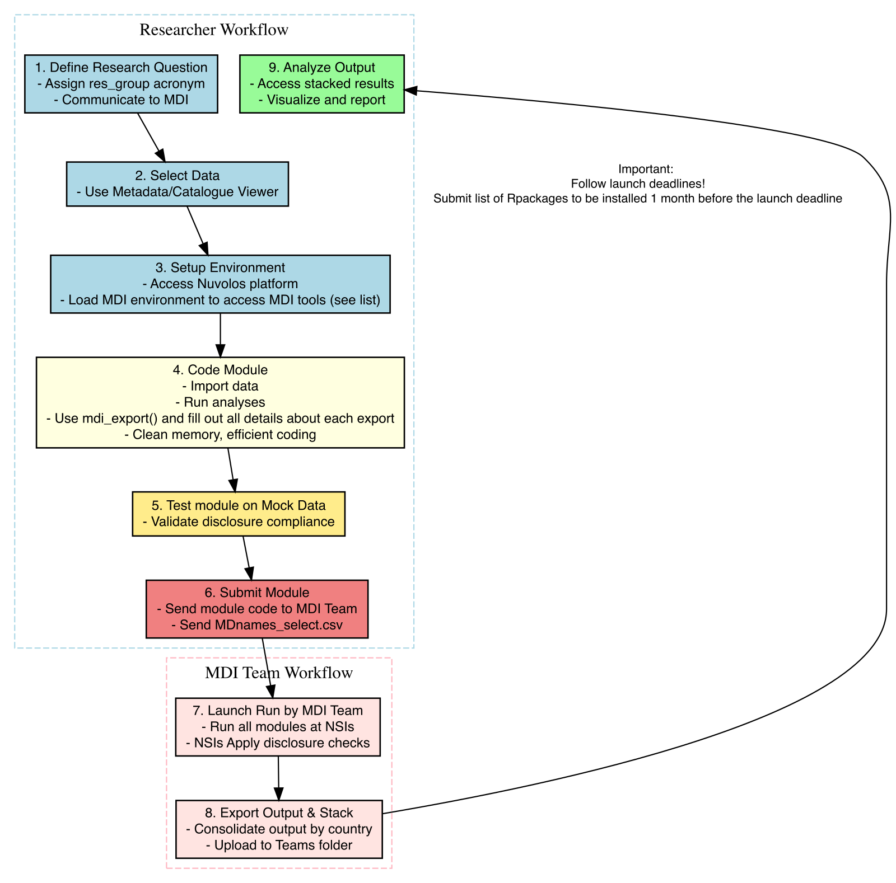

The never-finished manual of the Micro Data Infrastructure
Author
Affiliation
Eric Bartelsman and MDI team
Vrije Universiteit Amsterdam;Tinbergen Institute
Published
August 4, 2025
1 Introduction to MDI
This user guide provides users of the Micro Data Infrastructure (MDI) with all the necessary information to use and build the infrastructure.
1.1 What
The Microdata Infrastructure (MDI) is a platform for cross-country microdata access, developed by CompNet in collaboration with European National Statistical Institutes (NSIs) and other partners.
It is designed with a dual objective: to harmonize firm-level data across countries and to streamline the research process for conducting cross-country analyses on a wide range of topics.
At its core, MDI provides a standardized environment that enables researchers to perform identical analyses across multiple countries. It ensures microdata comparability and accessibility within a unified framework. The infrastructure supports functions ranging from data importation and harmonization to advanced analytical outputs, all within a secure environment that safeguards data confidentiality. In a nutshell, MDI does the following:
Raw data\(\rightarrow\)Data harmonization\(\rightarrow\)Comparable cross-country microdata
Raw data: refers to the task of compiling all available datasets and variables from each NSI into a detailed metadata inventory.
Data harmonization: refers to the entire process of constructing variables that are comparable across countries. This involves establishing a standardized set of variable names and definitions (MD metadata). Based on this standard, the raw data from each NSI is used to generate corresponding variables and files aligned with the MD metadata. The harmonization process also includes creating concordance tables to standardize categorical codes.
Comparable cross-country microdata: refers to the tools and guidelines provided to researchers for effective data use. This includes best practices for writing research code (module) and the provision of mock data (designed to replicate the structure of the real data) for testing purposes.
1.2 Who
The MDI is a joint initiative by CompNet, National Statistical Institutes (NSIs), and other partners. CompNet staff lead the technical maintenance and development of the infrastructure, and provide training and guidelines on how to use it. Together with NSIs and partners, they access firm-level data across countries and operate the MDI infrastructure to generate research outputs. Please see below the MDI stakeholders and process:
Code
%%{init: { "theme": "base", "themeVariables": { "primaryColor": "#5f7991", "edgeLabelBackground":"#ffffff", "lineColor": "#e40000", "textColor": "#000000", "fontSize": "26px" }, "flowchart": {"curve": "linear"}}}%%flowchart LR%% Stakeholderssubgraph STAKE["Stakeholders"] direction TB R[Researcher] C[CompNet / MDI Network] S[Statistical<br/>Institute] R -- "Research project and payload" --> C C -- "Code to build the infrastructure" --> S S -- "Metadata preparation" --> C C -- "Metadata and tools" --> Rend%% Remote environment subgraph REMOTE["Environment"] direction TB RA["Remote access (AT FR GB NL SI)"] MP["MDI partner (FI IT)"] RE["Remote execution (PT DE)"] RA <--> MP <--> REend%% Outcomessubgraph OUT["Outcomes"] direction TB O1[Special research and publication] O2[Standard moments and indicators ‑ publication] O1 -- "Output is obtained by Compnet/ MDI Network" <--> O2end%% Rocket Ro[🚀 **Rocket** 🚀]%% Graph flow STAKE --> RoSTAKE -- "Obtains the output" --> OUTRo --> REMOTEREMOTE --> OUT%% Style classDef remote stroke:#e40000,stroke-width:2px;class RA,MP,RE remote;classDef output fill:#5f7991,color:#ffffff;class O1,O2 output;classDef whitebg fill:#ffffff,stroke:#000000,color:#000000;class STAKE,REMOTE,OUT whitebg;
%%{init: {
"theme": "base",
"themeVariables": {
"primaryColor": "#5f7991",
"edgeLabelBackground":"#ffffff",
"lineColor": "#e40000",
"textColor": "#000000",
"fontSize": "26px"
},
"flowchart": {"curve": "linear"}
}}%%
flowchart LR
%% Stakeholders
subgraph STAKE["Stakeholders"]
direction TB
R[Researcher]
C[CompNet / MDI Network]
S[Statistical<br/>Institute]
R -- "Research project and payload" --> C
C -- "Code to build the infrastructure" --> S
S -- "Metadata preparation" --> C
C -- "Metadata and tools" --> R
end
%% Remote environment
subgraph REMOTE["Environment"]
direction TB
RA["Remote access (AT FR GB NL SI)"]
MP["MDI partner (FI IT)"]
RE["Remote execution (PT DE)"]
RA <--> MP <--> RE
end
%% Outcomes
subgraph OUT["Outcomes"]
direction TB
O1[Special research and publication]
O2[Standard moments and indicators ‑ publication]
O1 -- "Output is obtained by Compnet/ MDI Network" <--> O2
end
%% Rocket
Ro[🚀 **Rocket** 🚀]
%% Graph flow
STAKE --> Ro
STAKE -- "Obtains the output" --> OUT
Ro --> REMOTE
REMOTE --> OUT
%% Style
classDef remote stroke:#e40000,stroke-width:2px;
class RA,MP,RE remote;
classDef output fill:#5f7991,color:#ffffff;
class O1,O2 output;
classDef whitebg fill:#ffffff,stroke:#000000,color:#000000;
class STAKE,REMOTE,OUT whitebg;
Stakeholders in the MDI Ecosystem
National Statistical Institutes (NSIs) and other Partners
NSI remote execution
NSI remote access
Partners with country-specific (remote) access
NSIs provide the underlying data and support either remote execution or access to confidential firm-level data. While legal access rules, data availability, and technical infrastructure vary across countries, NSIs form the backbone of the standardized MDI research environment.
Module writers (MDI users)
Productivity Boards
External Academic and Policy
MDI ‘Theme’ research staff
MDI users include productivity boards, external researchers, and thematic research staff. They are responsible for designing research modules that harness MDI’s infrastructure for cross-country analysis.
MDI staff
Country specialists
Thematic research personnel
Infrastructure support teams
MDI staff ensure the effective development and operation of the MDI environment. They support NSIs with data preparation and documentation, and assist module writers by providing expertise on data, tools, and research themes.
1.3 How
The MDI infrastructure is a continuously evolving codebase, known as Rocket, that is periodically deployed within the secure environments of NSIs. Its main function is to process and harmonize raw data, execute research code (modules) , and export results, all while strictly complying with NSIs’ disclosure rules. This process, referred to as a launch, takes place every three months. Please see below the MDI launch pipeline:
flowchart LR
R["<b>Rocket</b><br>Contains research codes<br>(<i>modules</i>)<br>+<br>All needed R scripts to<br> harmonize the raw data"]
D[("Harmonized data<br>↑<br><b>Raw data</b><br>↓<br>Metadata<br><small>constantly updated</small>")]
O["<b>Output</b><br><small>CSVs outside the NSI<br> protected environment</small>"]
R --> D
D -->|export| O
D -.->|Metadata feed rocket| R
classDef rocket fill:#ffcccc,stroke:#333,stroke-width:2px;
classDef raw fill:#ccffcc,stroke:#333,stroke-width:2px;
classDef output fill:#ccccff,stroke:#333,stroke-width:2px;
class R rocket;
class D raw;
class O output;
2 Using MDI
2.1 MDI Users
MDI users (or module writers) include productivity boards, external academic and policy researchers, and MDI ‘Theme’ research staff. They are responsible for developing research modules that leverage MDI’s infrastructure for data analysis.
2.2 Setup for Researcher
Module writers develop and test their research code using mock data1 on the Nuvolos platform (see Nuvolos section). This process relies on a standardized metadata structure initialized through an R setup program. MDI staff then consolidate and stack country-level outputs, enabling cross-country analysis without granting direct access to firm-level data.
Click here to learn more
Module writers may or may not have access to actual firm-level data in a given country
MDI provides documentation detailing available datasets and variables, with descriptions by country and year.
Code can be tested using mock data in a ‘mock’ environment that simulates the NSI setup.
An R initialization program (../launchpad/interactive_MDI.R) sets up this mock-data environment with the required metadata and R tools.
Module writers analyze ‘consolidated’ outputs
MDI staff compile and stack country-level outputs into standardized files for each module writer’s analysis.
The R initialization program (../launchpad/interactive_MDI.R) also loads tools useful for analysis (e.g., graphs, tables, and cross-country panel regressions).
2.2.1 Deadlines and launch schedules
MDI modules are executed every three months through pre-scheduled launches. Accordingly, the MDI team communicates specific deadlines to all researchers for submitting their research modules.
2.3 Checklist
Below are two ordered checklists for the main MDI workflows: executing the launch and writing a research module.
Note
In countries with indirect data access, these steps are to be performed by the respective NSI, in case of direct access this is done by the MDI team.
Launch
Preparation
Launch
Reseacher
2.4 Workflow for writing modules
Writing modules for the MDI launch is an iterative process that moves from conceptualization to execution. It demands a solid understanding of the research objectives, data structure, and the technical features of the MDI environment.

MDI Module Writing workflow
2.4.1 Define your research question
Every module begins with a clear and concise research question, designed to leverage MDI’s cross-country data and produce meaningful analytical insights.
Important
Before writing the analytical code, you must define a research acronym for your module (specified as res_group <- '(some 2-letter string)') and communicate it to the MDI team.
2.4.2 Data selection
Use the MDI data catalog to identify and select the most relevant datasets and variables for your analysis.
Important
Ensure that all MD variables used in the module are available across all countries. Especially the employment variable.
However, keep in mind that the harmonized version of classification variable nace, called MDnace, is not present in the catalog.
In case you want to use them in your code, make sure you use MDnace instead of nace.
Conversely, the harmonized version of product and trade codes (prodcom and cn08, respectively) have the original classification variable name.
If you want to use the original non-harmonized codes, make sure you use NSI_(classname) in your code.
Additionally, module writers can also look at information on data source, firm sample and other details (taken from the NSI_datafiles tables) on the raw datafiles underlying each MD panel by using the interactive tool below:
Once the final selection of MD variable names has been made for the module, a file named (res_group)_MDnames_select.csv must be submitted to the MDI team. This file should include the following columns:
MD_dataset
MD_varname
2.4.3 Analysis
2.4.3.1 Libraries, packages and the MDI R tools
Make use of MDI R-packages (see ../rocket/Rtools/Rpackages/Rpackage_info_v2.2_.csv) and Rtools(see: ../docs/MDI_Rpackage_0.2.2.pdf): See the R-package libraries currently installed at NSIs and loaded at runtime of the launcher at ../rocket/Rtools/Rpackages/record_package_info.csv or below
PDF viewer of the mdi R library manual
If you need a package that is not part of the current list of R libraries, notify the MDI staff so it can be added to the NSI requirements. When preparing output, use standardized functions from the MDI Rtools (see directory ../rocket/Rtools/R) whenever possible.
List of currently used R libraries
Package
Version
Title
NL_version
abind
1.4-5
Combine Multidimensional Arrays
broom
1.0.6
Convert Statistical Objects into Tidy Tibbles
1.0.7
cluster
2.1.6
""Finding Groups in Data"": Cluster Analysis Extended Rousseeuw et al.
conflicted
1.2.0
An Alternative Conflict Resolution Strategy
data.table
1.17.2
Extension of `data.frame`
1.16.2
devtools
2.4.5
Tools to Make Developing R Packages Easier
DiagrammeR
1.0.11
Graph/Network Visualization
dplyr
1.1.4
A Grammar of Data Manipulation
factoextra
1.0.7
Extract and Visualize the Results of Multivariate Data Analyses
fixest
0.12.1
Fast Fixed-Effects Estimations
FNN
1.1.4.1
Fast Nearest Neighbor Search Algorithms and Applications
foreign
0.8-86
Read Data Stored by 'Minitab', 'S', 'SAS', 'SPSS', 'Stata', 'Systat', 'Weka', 'dBase', ...
frontier
1.1-8
Stochastic Frontier Analysis
fs
1.6.6
Cross-Platform File System Operations Based on 'libuv'
1.6.4
ggplot2
3.5.2
Create Elegant Data Visualisations Using the Grammar of Graphics
3.5.1
git2r
0.36.2
Provides Access to Git Repositories
0.33.0
gmm
1.8
Generalized Method of Moments and Generalized Empirical Likelihood
gridExtra
2.3
Miscellaneous Functions for ""Grid"" Graphics
gt
0.11.0
Easily Create Presentation-Ready Display Tables
0.11.1
haven
2.5.4
Import and Export 'SPSS', 'Stata' and 'SAS' Files
igraph
2.0.3
Network Analysis and Visualization
knitr
1.50
A General-Purpose Package for Dynamic Report Generation in R
1.49
lfe
3.0-0
Linear Group Fixed Effects
mFilter
0.1-5
Miscellaneous Time Series Filters
modelsummary
2.2.0
Summary Tables and Plots for Statistical Models and Data: Beautiful, Customizable, and Publication-Ready
momentfit
0.5
Methods of Moments
openxlsx
4.2.5.2
Read, Write and Edit xlsx Files
4.2.7.1
pander
0.6.5
An R 'Pandoc' Writer
plm
2.6-4
Linear Models for Panel Data
poLCA
1.6.0.1
Polytomous Variable Latent Class Analysis
readr
2.1.5
Read Rectangular Text Data
readxl
1.4.3
Read Excel Files
Rtsne
0.17
T-Distributed Stochastic Neighbor Embedding using a Barnes-Hut Implementation
shiny
1.10.0
Web Application Framework for R
1.9.1
stargazer
5.2.3
Well-Formatted Regression and Summary Statistics Tables
stringr
1.5.1
Simple, Consistent Wrappers for Common String Operations
tidyr
1.3.1
Tidy Messy Data
zip
2.3.1
Cross-Platform 'zip' Compression
zoo
1.8-12
S3 Infrastructure for Regular and Irregular Time Series (Z's Ordered Observations)
The MDI team also maintains an overview of:
Installed R versions at each NSI, along with details on package installation policies. This information is available in Rversions_countries.csv, located in the /MDI/docs/.
Country-specific R info
Code
library(readr)library(knitr)library(kableExtra)# Read the rversions datarversions_data <-read_csv("Rversions_countries.csv", show_col_types =FALSE)# Create a scrollable tablekable(rversions_data, format ="html", escape =TRUE) %>%kable_styling(full_width =FALSE) %>%column_spec(ncol(rversions_data), width ="25em") %>%scroll_box(width ="100%", height ="auto")
Country
R-version
Date
cran_install (Yes/No)
install_method (CRAN, IT-managed, Other specify)
version_control (Yes/No/Partial specify)
r_update_freq
library_restore (Yes/No/Manual)
Additional info
SI
4.4.1
Apr.25
No
The package files need to be imported to the environment and manually installed
Yes but it can be annoying to handle with dependencies
a few times per year
Yes
NA
FR
4.3.1
Aug.24
No
Local CRAN Mirror
No. Only the latest version of the packages are available by default
A few times per year
Manual
NA
AT
4.1.3
Aug.24
No
IT-managed
No
They provide all Users with a shared library so they always install the newest version.
Ad hoc
NA
FI
4.3.1
Apr.25
No
Local CRAN Mirror. Package updates may take a few days
No. Only the latest version of the packages are available by default
Infrequent (less than once per year). The packages will need to be reinstalled after each R update.
No
NA
PT
4.2.3
Aug.24
NA
NA
NA
NA
NA
NA
NL
4.2.3
Sept.24
No
IT-managed
Partial
Every 1.5 months
Yes
During each scheduled maintenance weekend, all packages are updated to their latest versions. Older versions are archived, allowing rollback to a specific version if needed (CBS will assist with this on request). However, if a desired version was never the latest at the time of a maintenance update, it won’t be available on the server.
GB
4.4.0
Apr.25
No
The package files need to be imported to the environment and manually installed
Yes but it can be annoying to handle with dependencies
a few times per year
No
NA
Code
# Display table with column definitionsrversions_def <-read_csv("Rversions_columns_definitions.csv", show_col_types =FALSE)# Display it as a regular tablekable(rversions_def)
Column name
Definition
R-version
The current R-version installed in the NSI remote env.
Date
Date of the last info updation on the R-version
cran_install (Yes/No)
Whether packages can be installed directly from CRAN (Yes/No)
install_method (CRAN, IT-managed, Other specify)
Method used if not CRAN (e.g., Manual, IT-managed, Custom script)
version_control (Yes/No/Partial specify)
Can specific package versions be installed (Yes/No/Partial)
r_update_freq
Frequency of R updates (e.g., Quarterly, Annually, Ad hoc)
library_restore (Yes/No/Manual)
Whether initial libraries are restored after update (Yes/No/Manual)
Additional info
Any additional notes or info
Package conflict resolution preferences are documented in conflicts_prefer.csv, located under /MDI/rocket/Rtools/Rpackages/.
R Package conflicts info
Code
library(readr)library(knitr)library(kableExtra)# Read the rversions datasetwd('..')setwd('rocket/Rtools/Rpackages/')rconflicts_data <-read_csv("conflicts_prefer.csv", show_col_types =FALSE)# Create a scrollable tablekable(rconflicts_data, format ="html", escape =TRUE) %>%kable_styling(full_width =FALSE) %>%column_spec(ncol(rconflicts_data), width ="25em") %>%scroll_box(width ="100%", height ="auto")
Function
ConflictingPackages
Count
PreferredPackage
%>%
dplyr, tidyr, stringr, DiagrammeR, gt
5
dplyr
Position
ggplot2, base
2
ggplot2
all_of
dplyr, tidyr
2
dplyr
any_of
dplyr, tidyr
2
dplyr
as.Date
zoo, base
2
base
as.Date.numeric
zoo, base
2
base
as.data.frame
git2r, base
2
git2r
as_label
dplyr, ggplot2
2
dplyr
as_tibble
dplyr, tidyr
2
dplyr
between
data.table, dplyr, plm
3
data.table
body<-
methods, base
2
base
bread
fixest, momentfit, sandwich
3
fixest
coef
momentfit, stats
2
momentfit
combine
dplyr, gridExtra
2
dplyr
confint
momentfit, stats
2
momentfit
contains
dplyr, tidyr, gt
3
dplyr
diff
git2r, base
2
git2r
ends_with
dplyr, tidyr, gt
3
dplyr
enexpr
dplyr, ggplot2
2
dplyr
enexprs
dplyr, ggplot2
2
dplyr
enquo
dplyr, ggplot2
2
dplyr
enquos
dplyr, ggplot2
2
dplyr
ensym
dplyr, ggplot2
2
dplyr
ensyms
dplyr, ggplot2
2
dplyr
estfun
fixest, sandwich
2
fixest
everything
dplyr, tidyr, gt
3
dplyr
expr
dplyr, ggplot2
2
dplyr
filter
dplyr, stats
2
dplyr
first
data.table, dplyr
2
data.table
fixef
fixest, plm
2
fixest
head
git2r, utils
2
git2r
index
zoo, plm
2
plm
intersect
dplyr, base
2
dplyr
kernapply
momentfit, stats
2
momentfit
kronecker
methods, base
2
base
lag
dplyr, plm, stats
3
dplyr
last
data.table, dplyr
2
data.table
last_col
dplyr, tidyr
2
dplyr
lead
dplyr, plm
2
dplyr
matches
dplyr, tidyr, gt
3
dplyr
merge
momentfit, git2r, base
3
momentfit
model.matrix
momentfit, stats
2
momentfit
nobs
plm, stats
2
plm
npk
MASS, datasets
2
MASS
num_range
dplyr, tidyr, gt
3
dplyr
one_of
dplyr, tidyr, gt
3
dplyr
p
shiny, pander
2
shiny
plot
momentfit, graphics, base
3
momentfit
print
momentfit, base
2
momentfit
pull
dplyr, git2r
2
dplyr
quo
dplyr, ggplot2
2
dplyr
quo_name
dplyr, ggplot2
2
dplyr
quos
dplyr, ggplot2
2
dplyr
reset
lmtest, git2r
2
git2r
residuals
momentfit, stats
2
momentfit
select
dplyr, MASS
2
dplyr
setdiff
dplyr, base
2
dplyr
setequal
dplyr, base
2
dplyr
show
momentfit, methods
2
momentfit
starts_with
dplyr, tidyr, gt
3
dplyr
subset
momentfit, base
2
momentfit
summary
momentfit, base
2
momentfit
sym
dplyr, ggplot2
2
dplyr
syms
dplyr, ggplot2
2
dplyr
tag
shiny, git2r
2
shiny
tags
shiny, git2r
2
shiny
tibble
dplyr, tidyr
2
dplyr
tribble
dplyr, tidyr
2
dplyr
union
dplyr, base
2
dplyr
update
momentfit, stats
2
momentfit
vars
dplyr, ggplot2, gt
3
dplyr
vcov
momentfit, stats
2
momentfit
vcovHAC
momentfit, sandwich
2
momentfit
vcovHC
sandwich, plm
2
plm
yearmon
data.table, zoo
2
data.table
yearqtr
data.table, zoo
2
data.table
In the event of package conflicts, we follow the preferences outlined in this file. However, if a module requires a function from a non-preferred package, authors must explicitly use the package::function() syntax to avoid ambiguity. This syntax is generally encouraged to ensure clarity and compatibility across systems.
While we aim for a harmonized environment, some variation between countries may persist due to local constraints. Any such discrepancies are documented and communicated to module writers before deployment.
There are five general categories of R tools:
Metadata: for generating, verifying, and manipulating metadata
Infra: used by MDI staff for data importation, harmonization, and disclosure checks
MDI: mostly for module writers, e.g. merge_datatables, regressions, aggregations, export
Analysis: support analytical tasks and reporting
Programmer: assist with R coding tasks
All tools are documented using Roxygen2 and exported as an R package. You can access documentation via the standard ?function() syntax, or by clicking on the mdi package in the RStudio package tab to view the full list of available functions.
2.4.4 Importing data
The NSI metadata enables the creation of standardized microdata panels (MD), which are harmonized and managed by the Launcher based on the logic defined in countdown.R.
MD datasets can be imported from the dirTMPSAVE folder, which is predefined in the environment. For example, the MD dataset ITGS can be imported using the following code snippet:
Code
BR <-readRDS(paste0(dirTMPSAVE, 'BR.rds'))
Harmonizing data and importing them in a module
The NSI metadata includes all necessary concordances to build standardized microdata panels (MD). These panels are harmonized and stored by the Launcher, with key parameters defined in ../launchpad/countdown.R. The folder path for saved MD panels is given by dirTMPSAVE, while the flags ImportFlag = TRUE and cleanTMP = TRUE control the logic for Rocket execution (see steps to write and execute your codes).
Each module generates a (res_group)_MDnames_select file, which is also used by the Launcher to generate the required data for all modules.
When reading a dataset (e.g., BR), only load the variables specified in your selection.
Always verify that the selected variables are available for the country in question. If not, include logic in your code to skip the analysis or offer an alternative.
2.4.5 Manipulating data
You can freely manipulate linked panels using R and its libraries, such as data.table, dplyr, and the broader tidyverse.
Managing firm units
When writing your analytical module, always check the unit of observation in each MD dataset for all countries where your code will run. This can be verified in the MDI Metadata Viewer.
For example, if using the ENER dataset, note that the unit of observation may vary between countries—such as between France and Portugal. Your R code must account for these differences to ensure analytical consistency. For details on the units used in each MD dataset, please refer to the metadata file MD_idInfo.csv.
To assist with this, the MDI toolkit includes a utility for aggregating or disaggregating between different key IDs. This tool is located in rocket/Rtools/R/mdi_key_id_switch.R and uses the metadata file *NSI*_firmid_entgrp_conc.csv.
2.4.5.1 Working with classifications
Classification variables, such as industry or product codes, are key in microdata work. We use tools that allow classification lists to be coherent over time.
In those harmonized MD datasets where a classification variable is present, be aware that the those inclide both the raw classification variable and the time-concorded one. Hence, make sure you keep this in mind when designing your code!
In particular, when you prepare your (res_group)MDnames_select.csv, please use the original MDnames for all classification variables, but feel free to use the concorded MDnames for the concorded classification variables.
Additionally, when merging data from two files, use the mdi_mergeDTs() function. This helps prevent memory issues and ensures that merges are performed correctly.
Tip
When working with MD_dataset CIS, given that the data comes from bi-yearly surveys, it is suggested to always merge CIS with BR, like
Code
DT <-merge(BR, CIS, by =c('firmid','year'), all.x = T)
Then the user can decide on how to interpolate the values in the missing years for the same firmid.
Last but not least, be a smart coder: clean up unnecessary datasets, and avoid writing code that calls the operating system, creates (sub)directories, or installs R packages.
2.4.6 Analytical tools
The MDI toolkit includes a set of functions designed to help researchers efficiently carry out common tasks in firm-level microdata research. In this section, we present some of the key tools available. For more details, please refer to the MDI R tools section above and consult the mdi library PDF.
mdi_aggregate()
This tool aggregates variables in a data.table by group, allowing customizable statistics (e.g., sum, mean, HHI – check the PDF manual of the mdi library for the full list of methods in the related section), optional merging with the original dataset, and built-in disclosure checks.
Working with quantiles
Note that any output containing data points (such as plots or tables with quantiles) cannot be exported due to disclosure restrictions. Hence, quantiles cannot be exported as such.
However, keep in mind that mdi_aggregate() allows to compute the mean of the minimum number of observations allowed for disclosure (the function uses MDIminNumObs, check the related section below) around the observation that is closest to the first (q25), second (median) or third (q75) quantile value.
The diagram below illustrates how this value is calculated for a series of values (3 to 11), in case
Note that if the number of observations for the aggregate is small then the coefficient might be very different from the quantile value.
estimate_markup()
This function computes firm-level markups using the De Loecker (2012) method, which divides output elasticity multiplied by revenue by input costs, and returns the resulting markup as a new variable.
estimate_prod()
This tool estimates firm-level production function parameters (such as input elasticities and/or TFP) using OLS, ACF, or OP methods under Cobb-Douglas or translog specifications. It offers flexible options for fixed effects, instruments, and grouped estimation.
mdi_regress()
This function runs one or more regressions using feols or feglm from the fixest package, performs automatic disclosure checks to ensure the minimum observation threshold is met, and optionally exports LaTeX regression tables with accompanying metadata logs.
pim_capital()
This tool estimates firm-level capital stock using the Perpetual Inventory Method (PIM), based either on a user-specified depreciation rate or an inferred asset type. It returns the original data.table with an added capital stock variable.
Industry Aggregations
Researchers may wish to conduct their analysis at various levels of sectoral aggregation. The MDI infrastructure supports this by providing classification concordances such as MD_nace_hier.csv and MD_naceR2_CNind_classconc.csv, which allow NACE Rev.2 industry codes to be mapped to broader industry groupings—such as 3-digit, 2-digit, 1-digit levels, and the CompNet macroindustry classification.
2.4.7 Exporting results
Once a results table is generated, the researcher must extract the file at the end of the module. After the launch is fully executed in a given country, the country leader submits an export request to the NSI, which then verifies compliance with disclosure rules for each output file (see disclosure criteria for details).
The mdi_export() function facilitates this process by exporting a data.table to a specified file format and logging comprehensive metadata—including variables used, purpose, and dataset context—into a central description file (OutputDescription.csv), which is also extracted. The function includes optional disclosure checks for summary statistics.
Below is a description of all parameters required for mdi_export():
Focus on mdi_export()
It is fundamental, for disclosure reasons, that the module writer fills in exhaustive information related to each output file when using function mdi_export(). In particular, please provide
format
Character string specifying the format of the export (‘csv’, ‘RDS’, ‘txt’, ‘dta’, ‘xlsx’, ‘sas’).
output_name
The name of the file to be created, without the file extension and the country code.
datasets_used
The name of the MD_dataset(s) used for the analysis.
purpose
Describe the research purpose of the analysis.
rel_other_output
Describe how this output file relates to other previously exported/requested files, for instance whether it performs the analysis in a different way and, if so, how.
selection
Describe if the results contained in the file were derived from a specific selection of the sample available (if so, explain which selection) or if the full sample is used.
export_type
Character string indicating the type of output (‘sum_stat’ for summary statistics, ‘reg_tab’ for regression table, or ‘other’).
description
A string providing additional explanation of the output file.
2.4.8 Consolidation of MDI Module Output
Once the files pass the disclosure checks:
Country leaders/NSIs will upload each country’s output to their designated Teams folder.
MDI staff will consolidate (stack) the outputs of each module by country and place both the module-specific and general launcher outputs in the appropriate Teams folder for module writers.
Researchers can run ../launchpad/interactive_MDI.R to initialize their MDI environment in a standardized way.
Researchers then analyze the output, optionally using standardized tools for statistical analysis, graphing, and reporting.
2.5 Dealing with classifications
A key feature of firm-level research is the use of classifications, such as industry codes (NACE codes), product codes (PRODCOM codes) and trade codes (combined nomenclature codes). Given that the official set of codes in a classification can vary across the years, we developed some tools that allow us to have a consistent list of codes over time in each country. Specifically, we make use of two tools:
make_conc()
This tool is currently used to harmonize PRODCOM and ITGS codes over time.
Firstly, it takes the time concordance tables for each couple of years and reproduces the development of each code over time. This way, the yearly concordances traces all the possible changes of the codes from the first year to the last year of the relevant period. Secondly, it links all the paths of codes that have common codes. This way, it harmonizes these groups of codes with a common code from the last year of the relevant period.
Note: Column left in a time concordance table, the one we received from the NSI, might not contain all codes we observe in the dataset at time year-1. Hence, it is advised to use tool mdi_timeconc_update() from the mdi package. This tool makes sure that if there’s any missing mapping, those are present in the time concordance table for that dataset.
As inputs, it requires the yearly concordance tables of the classification (in data.table format), the numeric vector of the years of interest, and the character name of the classification. It returns the data.table that concords each code to the harmonized code, for each year.
It returns the original MD dataset with the old NSI class code (under column NSI_(classname)) and the harmonized code (under the column using the classification name).
concord_nace()
This tool harmonizes NSI NACE classification over time.
First, it detects the year with the most NACE code changes, the year with a possible break in the classification. Then, it uses the mode NACE code in the post-break year as harmonized NACE code and harmonizes previous year codes accordingly, by firm. For firms present only before the break year, their codes are harmonized depending on the changes of the surviving firms, which are used to create a concordance table between codes in the pre- and post-break year.
As inputs, it requires the character dataset name; a logical to decide whether or not to weight code matches of surviving firms by employment (instead of number of firms); the number indicating the cumulative residual share of firms deleted for the construction the pre- and post-break year concordance; and the number indicating the share of firms deleted for the construction of such concordance.
It returns the original MD dataset with the old NSI NACE code (under column nace) and the harmonized NACE (under column MDnace).
It will be possible, then, to add the MD NACE through the concordance table between NSI NACE codes and the MD NACE codes.
2.6 Disclosure Criteria
2.6.1 What are Disclosure Criteria
Disclosure criteria at National Statistical Institutes (NSIs) are rules designed to protect the confidentiality of firm-level data. They ensure that no output allows the identification of individual firms or the disclosure of sensitive information, even in aggregated form. These criteria are crucial for complying with national privacy and data protection regulations.
2.6.2 How Disclosure Criteria Are Applied:
MDI tools automate disclosure control by applying primary and secondary confidentiality rules (such as minimum observation thresholds and dominance criteria) before any output is released. These rules ensure that sensitive data is suppressed or flagged, in line with the parameters defined in the Countdown.
Learn more how this is done
MDI tools such as mdi_aggregate(), disclose(), DisclosCrit(), mdi_regress(), and mdi_export() help automate disclosure control by enforcing rules based on parameters set in the Countdown, ensuring compliance before output is released.
Primary disclosure (Step 1) requires suppression of all cells that fail the dominance criterion or contain fewer than the minimum number of observations (minNrObs).
Secondary disclosure (Step 2) involves suppressing additional cells to protect those flagged in Step 1, following the minimum frequency rule. This typically means suppressing the smallest unsuppressed cell if only one cell was suppressed in Step 1 (applicable to totals/sums where the parent node is available).
For example, a cell not meeting NumObs or exceeding domPerc is suppressed. Outputs violating these criteria are flagged or excluded from export.
2.6.3 Components of Disclosure Criteria in the MDI:
Four main variables are created by MDI tools to assess diclosure criteria:
Dominance Share
Dominance Share (MDIdomSh): The maximum share of the total (e.g., employment, sales) contributed by the largest ‘X’ firms (number ‘X’ defined by domNr) in a cell. Example: If domPerc is 0.75, The top ‘X’ firms cannot contribute more than 75% to the cell’s total.
Minimum Number of Observations
Minimum Number of Observations (MDIminNumObs): The minimum number of firms required in a cell for it to be included in the output. Example: If NumObs is 3, at least 3 firms must contribute to a cell.
Top Firms Count
Top Firms Count (MDIdomNr): Specifies how many top firms’ shares are considered when applying the dominance criterion (domPerc). Example: If domNr is 1, the dominance is based on the largest firm; if 2, the top two firms are considered.
Dominance Variable
Dominance Variable (MDIdomVar): The variable on which the dominance criterion is applied, such as employment (emp) or sales (nq). Different NSIs may apply criteria to different variables, depending on their legal requirements. Note: The domVar can be ‘var’ in the countdown. If so, the domPerc is computed for all variables for which an aggregate is computed.
Show dominance percentiles
Show dominance percentiles (show_domVar): This is a dummy variable indicating whether the dominance percentile columns needs to be included (1) or not (0) in the output file.
Hide or not hide values post-disclosure
Hide or not hide values post-disclosure (show_values): This is a dummy variable indicating whether the aggregates in the output file need to be hidden (0) or not (1) in case they don’t comply with the disclosure rules of the NSI.
2.6.4 Disclosure Criteria in MDI Countries
Below is the disclosure criteria in MDI countries:
disclosure_variable
AT
FI
FR
DE
NL
PTx
PT
SI
GB
MDIminNumObs
10
3
4
NA
10
1
1
5
10
MDIdomVar
var
persons_br
var
NA
var
var
var
var
var
MDIdomSh
0.8
0.75
0.85
NA
0.5
1
1
0.5
0.4375
MDIdomNr
2
1
1
NA
1
1
1
1
1
show_domPerc
1
1
1
NA
1
0
0
1
1
show_values
0
0
1
NA
0
1
0
1
0
Some countries apply additional disclosure criteria. For instance, the Netherlands (NL) and Slovenia (SI) require that all exported variables (not just employment (emp) and sales (nq)) comply with the dominance share criterion. In such cases, the parameter domVar is set to ‘var’ in the Countdown file. These disclosure parameters are configured during the execution of the infrastructure at an NSI, either by MDI or NSI staff.
2.6.5 Disclosure Tools in MDI
The MDI tools listed below operate using the disclosure parameters defined by the user in the Countdown file.
Tool
Purpose
Use.by.Researchers
Use.Other.MDI.Tools
mdi_aggregate.R
Aggregate data with optional disclosure checks: dominance threshold (`domPerc`) and minimum observations (`NumObs`).
Yes
Yes (`disclosCrit`, `disclose`)
mdi_regress.R
Performs regression analysis and automatically checks whether the number of observations meets the required minimum threshold for disclosure. Skips regressions that fail the check.
Yes
No
mdi_export.R
Exports datasets with optional disclosure compliance and metadata logging.
Yes
Yes (`disclose`)
disclose.R
Performs primary and secondary disclosure checks.
No
No
disclosCrit.R
Adds disclosure metrics (`domPerc`, `NumObs`) to datasets.
No
No
Module writers are strongly encouraged to use MDI tools to ensure compliance with the disclosure criteria of all countries where the module is intended to run.
2.6.6 Auxiliary Files
Deflators are constructed using data extracted from Eurostat via the eurostat R package. These include deflators for value-added, capital depreciation, investment, GDP, and the harmonized consumer price index (HCPI), all normalized to a 2010 base year (set to 1). The underlying Eurostat datasets—nama_10_a64, nama_10_a64_p5, nama_10_gdp, prc_hicp_aind, and nama_10_nfa—cover national accounts and price indices. Industry codes are mapped to 4-digit NACE Rev.2 classifications to ensure compatibility with firm-level data, enabling application across economic analyses. The processed deflator file is structured by country code (cc), industry code (ind), and year (year), and includes columns for deflators such as value-added (pnv), capital depreciation (pnc), GDP (pngdp), and HCPI (pnhcpi). It also contains asset-specific deflators (e.g., construction, machinery, intellectual property) and includes growth and depreciation rates, offering a detailed dataset for robust analytical use.
2.7 Nuvolos: where MDI users develop and test their codes
At present we are using the cloud server Nuvolos. This server replicates the environment of a national statistical institute and includes the MDI infrastructure. The Nuvolos server provides all the necessary tools, scripts, and libraries required to develop research modules. It also contains a mock dataset—a simulated version of real data that preserves the structure and functionality of actual data while excluding any sensitive details.
2.7.1 How to access
Nuvolos is the server environment that we use for trainings, testing, developing and debugging. There are two seperate environments:
Nuvolos: MDI Training Environment
Nuvolos: MDI Internal testing Environment
If you want to get access to either of the environments, reach out to Johanna via email or Teams.
2.7.2 MDI Training Environment
This space is designed for training, practicing, and familiarizing with the MDI infrastructure. It’s intended mostly for external people, as it already contains all relevant files, ie. the whole MDI infrastucture, mockdata. It’s an environement in which externals can test their codes using the MDI infrastructure and mockdata. It is updated periodically, so doesn’t always reflect the latest version of the MDI. It is not intended for bug-fixing and working on the infrastrucutre, as it doesn’t link to Github.
2.7.3 How to use
You will find a folder structure such as the one found in the NSI environments containing the actual microdata.
Files structure
2.7.3.1 “Files” section
You’ll find the following folders:
MDI: containing the MDI infrastructure
TMP: containing temporary files
NSIdatafiles: containing mock data files imitating real data
output: if a script generates any output it can saved here
To write their codes, users need to first follow some steps to load the environment. I.e., run some functions which import the mockdata and all the necessary auxiliary files mimicking the NSI environments.
Steps to write and execute your codes
go to the section “Applications” on the left navigation bar and open the RStudio application
Run the countdown:
In RStudio, on the right in the files section, look for the MDI > launchpad and open countdown.
R Click on ‘source’ to execute it.
You will be asked choose a program to run, choose interactive MDI by entering 4
Wait until the script is done. The metadata, Rtools and libraries are imported - you can now create/ run your script.
Create/ Execute a Module
Add a new file
Add your module code or any code that you want to run
Execute your code either line-by-line by clicking ‘run’ or all at once by clicking ‘source’
When you run your script, any errors will appear in the Console section. The executed lines are highlighted in blue, while errors are displayed in red. To resolve an issue, identify the problematic line in your script, make the necessary corrections, and run it again.
2.8 The complete MDI pipeline
Below is the complete MDI pipeline for your visualization:
Code
%%{init: { "theme": "base", "themeVariables": { "background": "#ffffff", "textColor": "#000000", "lineColor": "#000000", "fontSize": "26px" }}}%%flowchart TB%% Setting MDIA([🚀 **Microdata Infrastructure** 🚀]) --> |to initialize it...|A1([**launchpad/countdown.R**])A1 --> A2(set country code)A1 --> A3(set paths to directories)A1 --> A4(set disclosure parameters)A2 -.-> A5[AT, DE, FI, FR, NL, PT, SI] style A fill:#003366,stroke:#000000,color:#ffffff style A1 fill:#228B22,stroke:#ffffff,color:#ffffff style A2 fill:#90EE90,stroke:#ffffff,color:#000000 style A3 fill:#90EE90,stroke:#ffffff,color:#000000 style A4 fill:#90EE90,stroke:#ffffff,color:#000000 style A5 fill:#E6FFE6,stroke:#ffffff,color:#000000%% Options MDIA3 ---> B1([there are four options:])A4 ---> B1([there are four options:])A5 ---> B1([there are four options:])B1 --> C[(**pre_launch_checker.R**)]B1 --> D[(**litoff.R**)]B1 --> E[(**interactive_mdi.R**)]B1 --> F[(**prepare_NSI.R**)] style B1 fill:#F0F0F0,stroke:#FFFFFF,color:#000000%% Pre-launch CheckerC --> C1[checking if metadata corresponds to what we have in the environment]C1 --> C2(**Database**)C1 --> C3(**Varnames**)C1 --> C4(**Codebooks**)C1 --> C5(**Classfiles**)C2 -.-> C6[Do they all exist?]C3 -.-> C7[Do all varnames exist?]C3 -.-> C8[Are all varnames of the listed data type?] style C fill:#7A5DC7,stroke:#000000,color:#ffffff style C1 fill:#E6E6FA,stroke:#ffffff style C2 fill:#7A5DC7,stroke:#ffffff,color:#ffffff style C3 fill:#7A5DC7,stroke:#ffffff,color:#ffffff style C4 fill:#7A5DC7,stroke:#ffffff,color:#ffffff style C5 fill:#7A5DC7,stroke:#ffffff,color:#ffffff style C6 fill:#E6E6FA,stroke:#ffffff style C7 fill:#E6E6FA,stroke:#ffffff style C8 fill:#E6E6FA,stroke:#ffffff%% LiftoffD ---> D1(🚀 **main script that completes the launch sequence: loads essential R libraries, pulls in MDI resources and NSI metadata, and brings raw firm data plus concordance tables into the environment. This script launches the rocket** 🚀)D1 --> D2(read R libraries, import mdi library, import NSI metadata, import concordance tables)D1 --> D3(import raw firm data)D1 ---> |if data is already harmonized...|D4[**execute research modules**]D4 --> D5[M0]D4 --> D6[CN]D4 --> D7[EN]D4 --> D8[FD]D4 --> D9[MP]D4 --> D10[TC]D5 --> D11[🎊 **extract results** 🎊]D6 --> D11D7 --> D11D8 --> D11D9 --> D11D10 --> D11 style D fill:#8B0000,stroke:#000000,color:#ffffff style D1 fill:#8B0000,stroke:#ffffff,color:#ffffff style D2 fill:#FFD6D6,stroke:#ffffff,color:#000000 style D3 fill:#FFD6D6,stroke:#ffffff,color:#000000 style D4 fill:#8B0000,stroke:#ffffff,color:#ffffff style D5 fill:#FFD6D6,stroke:#ffffff,color:#000000 style D6 fill:#FFD6D6,stroke:#ffffff,color:#000000 style D7 fill:#FFD6D6,stroke:#ffffff,color:#000000 style D8 fill:#FFD6D6,stroke:#ffffff,color:#000000 style D9 fill:#FFD6D6,stroke:#ffffff,color:#000000 style D10 fill:#FFD6D6,stroke:#ffffff,color:#000000 style D11 fill:#8B0000,stroke:#ffffff,color:#ffffff %% Interactive MDIE --> E1[set up directories, call R libraries, load Rtools, and interactively explore the MDI environment] style E fill:#FF8C00,stroke:#000000,color:#ffffff style E1 fill:#FFF2DC,stroke:#ffffff %% Prepare NSIF --> F1[first time preparation of data and metadata, updating of metadata when new file years and file types become available] style F fill:#654321,stroke:#000000,color:#ffffff style F1 fill:#ECD9C6,stroke:#ffffff %% Harmonize raw dataD2 --> G(🔩 **harmonize raw data to MDI** 🔩)D3 --> GG --> G1(there are 4 methods for the harmonization process)G1 -.-> G2(**revalue**: transform value of a unique variable)G2 -.-> G3(**recode/reclass**: concord codebook/class variables as desired)G3 -.-> G4(**redefine**: aggregate one or more variables)G4 -.-> G5(**remap**: assign new name to a raw variable)G ---> D4style G fill:#4B4B4B,stroke:#ffffff,color:#ffffff style G1 fill:#E0E0E0,stroke:#ffffff style G2 fill:#F5F5F5,stroke:#ffffff style G3 fill:#F5F5F5,stroke:#ffffff style G4 fill:#F5F5F5,stroke:#ffffff style G5 fill:#F5F5F5,stroke:#ffffff
%%{init: {
"theme": "base",
"themeVariables": {
"background": "#ffffff",
"textColor": "#000000",
"lineColor": "#000000",
"fontSize": "26px"
}
}}%%
flowchart TB
%% Setting MDI
A([🚀 **Microdata Infrastructure** 🚀]) --> |to initialize it...|A1([**launchpad/countdown.R**])
A1 --> A2(set country code)
A1 --> A3(set paths to directories)
A1 --> A4(set disclosure parameters)
A2 -.-> A5[AT, DE, FI, FR, NL, PT, SI]
style A fill:#003366,stroke:#000000,color:#ffffff
style A1 fill:#228B22,stroke:#ffffff,color:#ffffff
style A2 fill:#90EE90,stroke:#ffffff,color:#000000
style A3 fill:#90EE90,stroke:#ffffff,color:#000000
style A4 fill:#90EE90,stroke:#ffffff,color:#000000
style A5 fill:#E6FFE6,stroke:#ffffff,color:#000000
%% Options MDI
A3 ---> B1([there are four options:])
A4 ---> B1([there are four options:])
A5 ---> B1([there are four options:])
B1 --> C[(**pre_launch_checker.R**)]
B1 --> D[(**litoff.R**)]
B1 --> E[(**interactive_mdi.R**)]
B1 --> F[(**prepare_NSI.R**)]
style B1 fill:#F0F0F0,stroke:#FFFFFF,color:#000000
%% Pre-launch Checker
C --> C1[checking if metadata corresponds to what we have in the environment]
C1 --> C2(**Database**)
C1 --> C3(**Varnames**)
C1 --> C4(**Codebooks**)
C1 --> C5(**Classfiles**)
C2 -.-> C6[Do they all exist?]
C3 -.-> C7[Do all varnames exist?]
C3 -.-> C8[Are all varnames of the listed data type?]
style C fill:#7A5DC7,stroke:#000000,color:#ffffff
style C1 fill:#E6E6FA,stroke:#ffffff
style C2 fill:#7A5DC7,stroke:#ffffff,color:#ffffff
style C3 fill:#7A5DC7,stroke:#ffffff,color:#ffffff
style C4 fill:#7A5DC7,stroke:#ffffff,color:#ffffff
style C5 fill:#7A5DC7,stroke:#ffffff,color:#ffffff
style C6 fill:#E6E6FA,stroke:#ffffff
style C7 fill:#E6E6FA,stroke:#ffffff
style C8 fill:#E6E6FA,stroke:#ffffff
%% Liftoff
D ---> D1(🚀 **main script that completes the launch sequence: loads essential R libraries, pulls in MDI resources and NSI metadata, and brings raw firm data plus concordance tables into the environment. This script launches the rocket** 🚀)
D1 --> D2(read R libraries, import mdi library, import NSI metadata, import concordance tables)
D1 --> D3(import raw firm data)
D1 ---> |if data is already harmonized...|D4[**execute research modules**]
D4 --> D5[M0]
D4 --> D6[CN]
D4 --> D7[EN]
D4 --> D8[FD]
D4 --> D9[MP]
D4 --> D10[TC]
D5 --> D11[🎊 **extract results** 🎊]
D6 --> D11
D7 --> D11
D8 --> D11
D9 --> D11
D10 --> D11
style D fill:#8B0000,stroke:#000000,color:#ffffff
style D1 fill:#8B0000,stroke:#ffffff,color:#ffffff
style D2 fill:#FFD6D6,stroke:#ffffff,color:#000000
style D3 fill:#FFD6D6,stroke:#ffffff,color:#000000
style D4 fill:#8B0000,stroke:#ffffff,color:#ffffff
style D5 fill:#FFD6D6,stroke:#ffffff,color:#000000
style D6 fill:#FFD6D6,stroke:#ffffff,color:#000000
style D7 fill:#FFD6D6,stroke:#ffffff,color:#000000
style D8 fill:#FFD6D6,stroke:#ffffff,color:#000000
style D9 fill:#FFD6D6,stroke:#ffffff,color:#000000
style D10 fill:#FFD6D6,stroke:#ffffff,color:#000000
style D11 fill:#8B0000,stroke:#ffffff,color:#ffffff
%% Interactive MDI
E --> E1[set up directories, call R libraries, load Rtools, and interactively explore the MDI environment]
style E fill:#FF8C00,stroke:#000000,color:#ffffff
style E1 fill:#FFF2DC,stroke:#ffffff
%% Prepare NSI
F --> F1[first time preparation of data and metadata, updating of metadata when new file years and file types become available]
style F fill:#654321,stroke:#000000,color:#ffffff
style F1 fill:#ECD9C6,stroke:#ffffff
%% Harmonize raw data
D2 --> G(🔩 **harmonize raw data to MDI** 🔩)
D3 --> G
G --> G1(there are 4 methods for the harmonization process)
G1 -.-> G2(**revalue**: transform value of a unique variable)
G2 -.-> G3(**recode/reclass**: concord codebook/class variables as desired)
G3 -.-> G4(**redefine**: aggregate one or more variables)
G4 -.-> G5(**remap**: assign new name to a raw variable)
G ---> D4
style G fill:#4B4B4B,stroke:#ffffff,color:#ffffff
style G1 fill:#E0E0E0,stroke:#ffffff
style G2 fill:#F5F5F5,stroke:#ffffff
style G3 fill:#F5F5F5,stroke:#ffffff
style G4 fill:#F5F5F5,stroke:#ffffff
style G5 fill:#F5F5F5,stroke:#ffffff
3 Building MDI
3.1 The MDI at an NSI site
The MDI provides a unified environment across NSIs2 with varying legal and technical frameworks, allowing researchers to conduct analyses on standardized microdata panels. These panels are built from heterogeneous data sources using detailed metadata, ensuring legal compliance, transparency, and cross-country comparability in statistical outputs.
The MD panel datasets and variables appear identical across countries, thanks to transparent construction practices supported by comprehensive MDI metadata. This metadata documents, for each country, the available files, variables, and classification lists used to map the underlying data into harmonized MD panels.
Learn more
NSIs vary in their legal access rules and technical setups for granting research use of firm-level data. The MDI addresses this heterogeneity by offering a unified solution that enables researchers to execute their analyses—packaged as a payload within the MDI rocket across multiple countries. MDI staff manage the negotiation of access agreements with each NSI in accordance with national regulations.
NSIs also differ in the data files they maintain, ranging from registers and surveys to administrative sources, and in how these are structured. The MDI resolves these differences by offering a set of harmonized microdata (MD) panel datasets and variables that are uniform in structure and naming, making them indistinguishable to computer code across countries. The underlying statistical and economic concepts are standardized, and the construction of MD panels is transparently documented.
The MDI metadata describe, for each country, the available data sources (registers or surveys), variables, and classification lists. These are used to map national data into a harmonized MD specification. At every NSI including the mock data site. The MDI environment appears identical to the code in the rocket and its payload.
The rocket is executed within each NSI’s secure MDI environment. It reads both data and metadata, harmonizes them, and constructs the MD panels.
The payload consists of research modules written in R, using standardized tools and launch-specific metadata. These modules generate statistical and analytical outputs that comply with disclosure rules, making them suitable for cross-country comparison and analysis.
3.1.1 Importing to, and exporting from, the NSI site
Whenever an import or export operation is required from or to an environment, it is important to consider both the time it takes and whether the operation incurs any monetary cost.
💵 Click to view costs per country
Country
Type
Time
Cost
NL
Import code/ metadata
1-2 days
free of charge
NL
Import data
1-2 days
free of charge
NL
Export code/ metadata
1-2 days
free of charge
NL
Light export results/ analysis
1-2 days
125 Euro
NL
Other export results/ analysis
1-2 days
250 Euro
SI
Import code/ metadata
1 day
free of charge
SI
Import data
1 day
free of charge
SI
Export code/ metadata
20-30 days
free of charge
SI
Light export results/ analysis
10-20 days
free of charge
SI
Other export results/ analysis
10 days
free of charge
FR
Import code/ metadata
1-2 days
free of charge
FR
Import data
1-2 days
free of charge
FR
Export code/ metadata
1-2 days
318 Euro for a 10 unit output package
FR
Light export results/ analysis
1-2 days
318 Euro for a 10 unit output package
FR
Other export results/ analysis
1-2 days
318 Euro for a 10 unit output package
PT
Import code/ metadata
few days
free of charge
PT
Light export results/ analysis
few days
free of charge
PT
Other export results/ analysis
few days
free of charge
FI
Import infrastructure
2-3 weeks
hourly fee
FI
Import code/ metadata
2-3 days
free of charge
FI
Light export results/ analysis
2-3 days
free of charge
FI
Other export results/ analysis
2-3 days
free of charge
AT
Import files
21-45 days
most cases 1h * 118 Euro
AT
Export files
21-45 days
most cases 1h * 118 Euro
In general, files to be downloaded from MDI to an NSI are stored in a TEAMS directory accessible to the respective NSI team. These files are located in the download folder of a SharePoint directory, which can be synced to your local machine. For example: ../OneDrive-SharedLibraries-IWHEconomicStudiesLab/MDI Data Providers Forum - PT. Each NSI also has an MDI TEAMS ‘upload’ directory, used to upload output generated by the rocket.
3.2 Initial set-up of MDI at the NSI (launch_v2.x)
For the first-time use of MDI, choose a directory where all MDI files and subdirectories will be stored. The person responsible for setting up and running MDI rockets must have read and write access to this directory and all its subdirectories.
Install the four MDI directories (available from the MDI TEAMS cloud directory) under the main root directory you have selected for MDI:
docs: Documentation of the MDI system, including the MDI Manual.
rocket: Code supporting and controlling MDI rocket launches, including NSI metadata and auxiliary data.
payload: Research modules, including metadata and NSI-specific NSI_MD concordances.
launchpad NSI-specific information for controlling MDI code and rocket launches.
Ensure that both the user and R programs have read access to the directory containing the raw data files.
Prepare a read/write directory for storing output files generated by the MDI R code prior to disclosure. After disclosure checks are completed, the approved files from this directory can be uploaded to the MDI TEAMS cloud directory designated for the NSI staff.
Fill in all the parameters needed in the file launchpad/countdown.R, including paths to relevant directories.
The NSI provides metadata of available firm-level data files.
The NSI and MDI staff construct metadata to harmonize and link the raw files to the firm-level panel (MD) datasets, whose standards are described in the metadata of MD panels and variables provided by MDI.
To prepare the metadata, run countdown.R and select the program prepare_nsi.R but only after completing the local configuration in launchpad/countdown.R. Preliminary metadata files will be written to the dirOUTPUT directory and must be reviewed and edited. Detailed instructions are provided in the Metadata section below. Once finalized, the metadata files should be uploaded to the designated TEAMS directory. After verification and processing by the MDI team, they will be incorporated into the NSImetadata directory for that country. The NSI can then download an updated version of the rocket, which will include the new metadata.
3.3.2 Launching the rocket and delivering output
When a new launch date is set, the NSI needs to download the latest version of the docs and rocket directories from the MDI Teams cloud site (if there are new versions available), and overwrite the old versions.
The new ‘payload’ subdirectory launch_v2.x directory needs to be downloaded and placed under the payload directory of the main MDI root directory.
The file countdown.R should be copied to the user’s directory and edited. Running countdown.R will allow user to choose further path of execution.
Two folders need to created (with no constraints on how to name them – they can be stored to a directory of preference to the user):
Output folder
Folder for temporary files
The following fields need to be manually specified, based on the directory system of the environment:
dirMDI: path to the MDI folder
CountryCode: 2-letter ISO 3166 code of the country of reference
dirINPUTDATA: path to the generic folder where the raw data is stored
dirOUTPUT: path to the output folder
dirTMPSAVE: path to the folder for temporary files
Disclosure parameters:
MDIminNumObs: minimum number of firm-level observations underlying computation of cell of output file
MDIdomSh: maximum share of top X firms to meet dominance criterion
MDIdomNr: the X in top X firms.
The program pre_launch_checker.R (run countdown.R and choose this program) needs to be run before anything else. It performs various checks on the NSI metadata to avoid errors later on. The results of the checks can be found in the file pre_launch_checker_results.txt in the output directory. It shows possible errors that should be adjusted in the NSI metadata. Additionally, two concordance files (NSI_pcc8t0_pcc8t1_conc.csv and NSI_MD_nace_conc.csv) are created using existing concordance files and updating them with the data at the NSI. These concordance table might contain empty values, if no value was previously defined. Missing values need to be filled in manually. When the concordance files are ready to be used, they need to be moved to the directory indicated in pre_launch_checker_results.txt
The program liftoff.R, chosen after running countdown.R, will run the MDI rocket and analytical modules. Iterations with the MDI staff may be needed for fixes and patches to the rocket and payload, until the final results are written to the dirOUTPUT directory.
The first time a country leader runs the MDI system in a country, the flag MDImoduleRun should be set to FALSE in countdown.R. This will trigger the Post-Harmonization Checker (PHC), which automatically runs during liftoff.R execution inside the rocket.R pipeline.
The PHC script performs quality checks on the harmonized microdata, such as detecting duplicates, format mismatches, date inconsistencies, and structural breaks. Please have a look at the detailed section on post harmonization checks for instructions for country leaders.
The results of these checks are saved to two files: <CountryCode>_phc_results.txt and breaks_report.pdf (in dirTMPSAVE) . These files must be reviewed and issues resolved before proceeding.
Once all checks are passed and the data is clean, you can set MDImoduleRun to TRUE and re-run liftoff.R to launch the full set of MDI modules.
The files in dirOUTPUT need to be checked for disclosure
The files in dirOUTPUT can be uploaded to the MDI Teams upload directory.
3.3.3 Mechanics of countdown, liftoff, rocket, payload
Copy countdown.R from MDI/launchpad/ to your own working directory. Fill in all parameters.
Run countdown.R and choose which program to run:
Run pre_launch_checker.R which you should run whenever a new version of the MDI system has been installed. It checks for consistency between NSI metadata known to MDI and the information in the data at the NSI site.
Run liftoff.R, which calls control/rocket.R
rocket.R calls
load_MDIenvironment.R
document_output.R (generates information to document details of launch and output files)
read_auxdata.R (deflators for now, maybe WIOD, downstream, maybe these go in modules)
read_firmdata.R (based on selectnames for all modules….)
post_harmonization_checks.R (runs checks on the harmonized data)
payload/launch_v2.x/run_modules.R executes the payload modules
cleanup.R cleans up the environment
Run prepare_NSI.R which sets up the NSI environment to generate metadata
Run interactive_MDI which you should run whenever working with the MDI system (other than liftoff or prepare).
3.3.3.1 Countdown
The countdown (coundown.R) is the starting point for all use of the MDI. It requires the to do some small adjustments, to make sure that the MDI can be executed successfully for the purpose selected. The following parameters need to be adjusted by the user.
MDI Installation Directory (dirMDI): Set the full path to the directory where all MDI files will be stored. Make sure the path ends with a “/”, eg. dirMDI=“my/dir/”
CountryCode (CountryCode): Specify a 2-letter country code following the ISO 3166-1 alpha-2 standard.
NSI data directory (dirINPUTDATA): Set the full path to the directory containing the NSI firm-level data files (or mock data). These input data files are the raw data from the National Statistical Institute (NSI) that the MDI process will integrate and harmonize.
Output directory (dirOUTPUT): Define the directory to which all generated output files will be exported. This directory is where results, module outputs and other output files will be stored.
Temporary storage directory (dirTMPSAVE): Set the directory for temporary storage of MDI virtual longitudinal datasets.
Note
This path helps manage intermediate files and allows to reuse processed data without re-importing each time.
Optional - Flags for temporary files: These flags control how the MDI process handles temporary files, data imports, and whether to start fresh or reuse cached data.
MDIimportFlag: Set to TRUE if you want to import raw NSI data files directly. If FALSE, the program uses existing virtual data from dirTMPSAVE.
MDIcleanTMP: If TRUE, the temporary directory dirTMPSAVE is cleaned before running.
Optional, to control execution: These flags influence how the MDI scripts run, whether they produce debug output, and what data environment they assume.
MDIdebug: Set to TRUE to display all logs, warnings, and errors. Use FALSE for a cleaner, quieter run.
MDIimputeFlag: Reserved for potential data imputation routines (currently not in active use).
IsMOCK: Set to TRUE if running a test scenario with mock data.
Click here to see the entire countdown.R script
# This file is used to work start MDI# fill in all the parameters and save this file: countdown.R# run the program in R and then choose to execute:# 1. run pre_launch_checker.R to run after an update of MDI at NSI, to check and fix metadata# 2. run liftoff.R to run rocket: execute MD harmonizer and run payload modules# 3. run prepare_NSI.R to run things to aid in getting metadata in good shape# 4. run interactive_MDI.R to initialize environment to test/debug/explore/write module code.rm(list =ls())MDI_launch_version <-"v2.2"######################################### Compulsory steps################################################################################# 10. Set the full path to the directory where you install the MDI files########################################dirMDI <-"/files/MDI/"######################################### 9. Give 2 letter country code for your site ("ISO 3166-1 alpha-2" standard)########################################CountryCode <-"FI"######################################### 8. Set the full path to the directory with NSI firm-level data files (or mockdata files)########################################dirINPUTDATA <-"/files/NSIdatafiles/"######################################### 7. Set the full path to the directory to which generated files are exported (dirOUTPUT)########################################dirOUTPUT <-"/files/output/"######################################### 6. Set the full path to the directory for temporary storage of MDI virtual longitudinal datasets (dirTMPSAVE)########################################dirTMPSAVE <-"/files/TMP/"######################################### Optional steps (steps 4, 3 & 2)############################################################################## 4. Flags for temporary MDI files ####################################### set ImportFlag=TRUE if you want to import raw NSI data files (if FALSE: reads MDI virtual data from dirTMPSAVE)MDIimportFlag <-TRUE################################################# 3. Flags for cleaning the temoporary folder ################################################## set cleanTMP=TRUE if you would like to clean the dirTMPSAVE before runningMDIcleanTMP <-FALSE###################################### 2. Flags to control execution ####################################### Set MDImoduleRUN = TRUE if the post_harmonization script has been run and checked and modules are ready to be run.# Should be set to FALSE when running the launch for the first time.MDImoduleRUN <-FALSE# set debug = TRUE if you don't want to suppress logs, warnings and errorsMDIdebug <-TRUE## NOTE EB: Nothing done at the moment with the imputeflag (was called inputeflag in early versions)MDIimputeFlag <-FALSE# Flag to indicate whether this is a test run on the server with mock dataIsMOCK <-TRUE# If isMOCK, temporary files are stored in CountryCode folder,# so that files arent overwritten when switching countryif (IsMOCK) { dirTMPSAVE <-paste0(dirTMPSAVE, CountryCode, "/")if (!dir.exists(dirTMPSAVE)) {dir.create(dirTMPSAVE) }}############################### 1. Liftoff ################################ save the program countdown.R to your work directory.# Run the file to choose which program/feature to execute:# Now, pick the program to be executed# 1. run pre_launch_checker.R to run after an update of MDI at NSI, to check and fix metadata# 2. run liftoff.R to run rocket: execute MD harmonizer and run payload modules# 3. run prepare_NSI.R to run things to aid in getting metadata in good shape# 4. run interactive_MDI.R to initialize environment to test/debug/explore/write module code.# ---> Choose below with number of the selected program# Check if the session is interactive (works both in RStudio and console)if (interactive()) {# Use select.list() for interactive selection user_input <-select.list(c("pre_launch_checker.R", "liftoff.R", "prepare_NSI.R", "interactive_MDI.R"), title ="Choose a program to run:")if (user_input !="") {# Source the corresponding scriptsource(paste0(dirMDI, "launchpad/", user_input)) } else {cat("No selection made. Exiting.\n") }} else {# If not in an interactive session, use readline() user_input <-as.integer(readline(prompt ="Please enter an integer (1 for pre_launch_checker.R, 2 for liftoff.R, 3 prepare_NSI.R, 4 interactive_MDI.R): "))if (!is.na(user_input) && user_input %in%1:4) {# Map the user input to the corresponding script name# Source the corresponding scriptsource(paste0(dirMDI, "launchpad/", user_input)) } else {cat("Invalid input. Please enter a valid integer (1, 2, 3 or 4).\n") }}
3.3.4 Post-Harmonization Quality Checks
After harmonizing your country’s microdata to the MD format, the Post-Harmonization Checker (PHC) script is automatically executed in the rocket to ensure that the harmonized datasets meet essential quality and consistency standards. This diagnostic process validates whether the resulting data is clean, correctly structured, and ready for module execution.
The script performs the following checks on the :
Check Type
Description
1. Duplicate Check
Identifies rows where the key ID variable (e.g., firmid) is duplicated.
2. Variable Class Check
Verifies that each variable matches its expected R data type (e.g., numeric, character, date).
3. Date Format Check
Ensures date variables are correctly formatted and parseable (e.g., %Y, %d%m%Y).
4. Date Range Check
Extracts the minimum and maximum detected dates per variable to check date range matches.
5. Break Detection
Identifies structural breaks in aggregate-level distributions over time (over 10% jumps).
Each of these checks outputs either a summary table (.txt) or a visual diagnostic (.pdf) to help identify problems.
3.3.4.1 PHC Output Files Generated
After the script runs successfully, you will find the following two files:
<CountryCode>_phc_results.txt Location:dirTMPSAVE Contents: Duplicate summary, class and format mismatches, detected date ranges.
Duplicate Check Table
Column Name
Description
dataset
MD dataset (e.g., BR, SBS, ICTEC)
id_var
The country-specific ID variable used to identify unique records taken from MD_idInfo
has_duplicates
TRUE if duplicated rows are found based on id_var, FALSE otherwise
num_duplicated_rows
Total number of rows that are duplicates (may include multiple per key)
num_unique_duplicated_keys
Number of unique key values (id_var) that are duplicated
Variable Class Check Table
Column Name
Description
dataset
MD Dataset
variable
Variable name being checked
expected_class
Class assigned to this variable in the metadata (MD_varnames)
actual_class
Actual class detected in the harmonized .RDS file
class_match
TRUE if expected and actual class match, FALSE otherwise
Date Format & Class Check Table
Column Name
Description
dataset
MD Dataset
variable
Variable name being checked
expected_class
Expected class (usually "date")
actual_class
Class detected in the file
expected_format
Date format expected (e.g., %Y, %d%m%Y)
actual_format
Detected format based on sample values
format_valid
TRUE if values can be parsed using expected_format, FALSE otherwise
class_match
Whether the variable is stored as a Date object
Date Range Check Table
Column Name
Description
dataset
MD Dataset
variable
Date variable being checked
actual_format
Detected format used to parse the variable
actual_min_date
Earliest parsed date in the variable
actual_max_date
Latest parsed date in the variable
expected_range
Expected range of years (as specified in MD_catalogue)
breaks_report.pdf Location:dirTMPSAVE Contents: Plots showing time-series breaks for each numeric variable by dataset. The red dots show a structural break in the time series defined by a minimum 10% jump.
Break Summary Table (PDF)
Column Name
Description
dataset
Dataset name
variable
Numeric variable being assessed for breaks
stat
Statistic showing the break (e.g., mean, p50, sd)
year
Year in which a structural break was detected
growth
Relative change from previous year (e.g., +0.25 = 25% increase, -1.0 = 100% drop)
3.3.4.2 Instructions for Country Leaders for Reviewing and Fixing PHC Errors
Duplicate Check
Check: Whether any rows share the same key (e.g., firmid) more than once.
Look for:has_duplicates == TRUE and high values in num_duplicated_rows or num_unique_duplicated_keys.
Fix: Review your harmonization step and ensure that each firm-year observation is uniquely identified. If intentional (e.g., due to panel structure), document it clearly.
Variable Class Check
Check: Compares expected vs. actual data types.
Look for:class_match == FALSE
Fix: In your country metadata, ensure each variable is explicitly cast to the correct type using functions like as.numeric(), as.character(), or as.Date() using the revalue method.
Date Format Check
Check: Whether date variables match expected formats (e.g., %d%m%Y).
Look for:format_valid == FALSE or actual_format == "unknown"
Fix: Recheck how date strings are parsed in your harmonization script and in the metadata. Use as.Date() with the proper format string.
Date Range Check
Check: Compares detected date range with expected year coverage.
Look for: Min or max dates far outside expected range (e.g., year 1001 or 9122).
Fix: Likely due to incorrect parsing. Verify input formats and metadata.
Break Detection
Check: Identifies abrupt jumps/drops in:
p25, p50, p75
Mean
Standard deviation
Look for: Large positive/negative growth values in the break summary and red dots in the plots.
Fix: Review input consistency across years (e.g., variable definitions, missing categories). Cross-check with national data providers to see if breaks are expected due to methodology changes.
Note
You are ready to proceed with running the MDI modules (e.g., setting MDImoduleRun = TRUE) only after:
All critical issues (e.g., duplicate rows, format mismatches, corrupted dates) are resolved.
You’ve documented any justified exceptions (e.g., expected breaks).
You’ve shared updates or escalated open issues to the MDI team.
Please keep backup copies of your harmonized .RDS files before making changes.
3.4 Metadata
This section provides an overview of how to construct NSI and MD metadata and how to establish the connection between them, ensuring that country-specific data sources are accurately mapped to the standardized MD panel structure.
3.4.1 Specifications for the NSI Metadata
This section summarizes the structure and content of the NSI metadata files. These files document, in both machine- and human-readable formats, the available data files, the unit of observation (i.e., the description of each row), the names and descriptions of the variables (i.e., columns) in each file, and the valid values for each variable, including their class and domain. The following paragraphs offer guidance on how to prepare country-specific metadata files accordingly.
Once created, the NSI metadata files must be uploaded to the designated TEAMS directory. After the NSI downloads the updated rocket, these metadata files will be located in the rocket/NSImetadata/*NSI*/ directory of the MDI infrastructure. The MDI program pre_launch_checker.R, which should be run whenever the MDI is updated—will identify inconsistencies and other issues in the metadata.
The main types of NSI metadata files prepared include:
datafiles: Lists all available NSI firm-level data files, including their names and years covered.
varnames: Documents the variables and their descriptions for each raw data file listed in datafile.
codebook: Maps categorical variable values to their corresponding descriptions.
class: Describes classification variables in the datasets, such as industry or product codes.
classvart0_classvart1_timeconc: Details how classification variables evolve over time, providing concordance between versions.
firmid_entgrp_conc: Maps the firm ID (enterprise unit) to its corresponding enterprise group by year.
It is advised to construct the files in the same order as in the above list.
Together with the MDI team, the NSI prepares metadata to support the harmonization of NSI data to the MD specification. The MDI team supplies metadata—potentially specific to each launch that describes the MD datasets and their variables. In addition, the MDI team and the NSI jointly provide concordances used to align NSI data files with the standardized MD format.
To facilitate this process, the MDI team also provides tools for creating the required metadata files. These tools can be found in the directory /rocket/MDIprogs/metadata_tools/.
In the filenames for the metadata, the acronym NSI is used. This should be substituted with the 2-letter country code for the country in question (using the ISO3166-2 standard, e.g. NSI = PT). For the MDI metadata, the two letters MD are used, and for the mock data test site, the letters TS are used.
3.4.1.1 List of NSI datafiles – NSI_datafiles.csv
This file contains the list of all available raw data files on a country’s environment. The file has the following columns:
NSI_dataset is the ‘generic’ name of the NSI datafile.
NSI_datafile is the name of the file in the NSI environment.
yearvar gives name of year variable if NSI_datafile is a panel, empty otherwise.
year_start is the starting year of the data file.
year_end is the last year of the data file (if empty or NA, the file is a panel and includes a variable ‘year’).
format is the file extension (csv, sas, stata, etc) of the file (i.e. also the storage format of the data).
path indicates path of the datafile relative to the NSI data directory (given by the parameter dirINPUTDATA in launchpad/countdown.R).
details contains additional notes on the file.
firm_unit indicates the type of firm observation unit. There can be four types of units. Below we provide a definition for each, taken from the Eurostat glossary, hierarchically ordered, i.e.
plant: A single-location enterprise or part of one, primarily engaged in one main productive activity. Also often known as ‘establishment’. This corresponds to plantid in the MD data
legal_unit: Either legal persons recognized by law or natural persons conducting economic activity independently. This corresponds to firmid in the MD data
enterprise: An organizational unit producing goods or services, with decision-making autonomy, possibly spanning multiple activities, locations, or legal units. Hence, one enterprise might be constituted by more than one legal unit. This corresponds to entid in the MD data
enterprise_group: A set of legally or financially linked enterprises, controlled by a group head, forming an economic entity with shared or centralized decision-making. This corresponds to entgrp in the MD data
data_source: refers to the origin of the data. Three options are possible:
survey: If the data was collected through surveys
administrative_source: Information collected by public authorities from firms as part of legal or regulatory requirements, such as tax records, employment filings, or financial statements
mixed: If the data comes both from surveys, administrative source of other collection methods.
firm_sample: Information about the population of firms present in the datafile (usually a piece of text, trying to be as concise as possible)
preprocessing: Instructions on how to perform a data preprocessing operation on the raw datafile. For more details, check the dedicated box.
An example (for NSI=FI, 2018) of the metadata for the raw data files (the columns yearvar, year_end, path and details are omitted for viewing):
NSI_datafile
NSI_dataset
year_start
format
firm_unit
data_source
preprocessing
bd2018
bd
2018
csv
legal_unit
adminiatrative_source
NA
br2018
br
2018
csv
legal_unit
adminiatrative_source
NA
bs2018
bs
2018
csv
legal_unit
adminiatrative_source
NA
cis2018
cis
2018
csv
legal_unit
survey
NA
ictec2018
ictec
2018
csv
legal_unit
survey
NA
ifats2018
ifats
2018
csv
legal_unit
adminiatrative_source
NA
*Note: Only the first 5 rows are displayed.
3.4.1.2 File-specific metadata – NSI_varnames.csv
This file contain the list of all variables in each raw datafile appearing in the column NSI_datafile of NSI_datafiles.csv. Each file has the following columns:
NSI_datafile is the name of the file in the NSI environment.
NSI_varname is the name (hopefully mnemonic) of the variable in the raw file.
is_key is a boolean stating whether variable belongs to the (possibly joint) unique keys of the datafile, e.g. firmid, or firmid,year are often the unique key(s).
description contains a description of the variable, if possible using Eurostat convention.
class is the type of value that the variable holds. The following data types can be encountered:
numeric: Numbers with or without decimals (e.g., 3, 4.5).
character: Text or string values (e.g., “apple”).
date: Calendar dates stored as Date objects (e.g., 2023-05-09).
logical / boolean: TRUE/FALSE values used in conditions and comparisons.
domain provides information on the values of the variable. See examples below:
classification: e.g. list of industry, region, product or codes. (values is metadata filename: e.g. NSI_classname_class.csv, which provides a list of permissible values and descriptions)
file-specific codebook of categorical answers. (value is metadata filename, e.g. *NSI_codebook.csv containing permissible values, such as ‘yes’, ‘no’,‘maybe’, or ‘small’, ‘large’, ‘medium’.
For other values:
For monetary values, “1000” (for 1000 Euros)
For dates: “%m%d%Y” (R date-format for mmddyyyy). For ‘year’ variable, we use “%Y”
For real units, choose from: “ton” (weight, 1000kg), “m3” (volume), “GJ” (energy), “unit” (1 item).
3.4.1.2.1 Domain: Expenditures, Quantities, Dates
Measure
Domain Entry
Description
Expenditure
1000
… or 1 Euro; 10000000 Euro; etc.
Foreign currency
1*FXC
… or 1000 etc.; Where FXC is an ISO 4217 3-letter currency code
Employment
1
1 here refers to 1 FTE; or 1000; … or 1 Emp if in persons
Numerical
1
1 here refers to 1 unit; … or 10; 100; where ‘unit’ gives unit in lowercase for the variable in the NSI data file
Date
%Y-%m-%d
Use the R date format that matches the values for the NSI date or year variable
Click to see an abbreviated list of R date formats:
Format
Description
Example
%a
Abbreviated weekday
Sun, Thu
%A
Full weekday
Sunday, Thursday
%b or %h
Abbreviated month
May, Jul
%B
Full month
May, July
%d
Day of the month 01-31
27, 07
%j
Day of the year 001-366
148, 188
%m
Month 01-12
05, 07
%U
Week 01-53, (start Sunday)
22, 27
%w
Weekday 0-6 (Sunday= 0)
0, 4
%W
Week 00-53 (start Monday)
21, 27
%x
Date, locale-specific
%y
Year 2-digit 00-99
84, 05
%Y
Year 4-dig: (69 to 99 - 19xx)
1984, 2005
%C
Century
19, 20
%D
Date formatted %m/%d/%y
05/27/84, 07/07/05
%u
Weekday 1-7 (Monday=1
7, 4
3.4.1.2.2 Domain: Classification or Categorical (factor) variables
Variable
Domain_Entry
Description
Classification variable
NSI_classname_class
An (official) list, ie NL_nace
Categorical variable
NSI_codebook
Contains permissible values for categorical (factor) variables, e.g. ‘yes’, ‘no’,‘maybe’
3.4.1.3 Codebook for categorical variables – NSI_codebook.csv
This file contains the possible values of a categorical variable and the description that belongs to that value. There rows give the possible values occuring in firm data for a particular NSI_datafile and NSI_varname. The name of the codebook should be given in the ‘domain’ columnn of NSI_varnames for the relevant categorical variable.
[1] NSI_dataset,NSI_varname,year,code,description
where:
NSI_dataset is the name of the generic dataset in the NSI environment.
NSI_varname is the name of the variable of that specific raw dataset.
year is the year for which codebook values hold. If empty, holds for all years of the NSI dataset.
code gives all the values of the categorical variable that occur for that NSI_varname in that NSI_datafile.
description gives the description explaining each code value.
An example below of the values occurring for the unit of measurement in the SI PRODCOM data for 2012.
This file contains the unique list of codes per year of a specific classification variable in a country. Note that there should be a list for every categorical variable in each dataset. The related table has the following columns:
[1] code,year,description
where:
code is the list values of the classification variable observed in the data.
year is the related year.
description gives the description for each code value.
An sample of rows from the table of PRODCOM codes (in this case some randomly selected rows from the list of codes of Finland):
code
year
08992110
2020
25301170
2008
28491267
2016
15721033B
2004
25736090
2021
28291350
2016
2490990090
2011
27116208
2017
28731440
2007
28413140
2016
22231159
2013
27112230
2012
17601150
2007
27402500
2018
20111160
2017
3.4.1.5 Time concordances for classifications – NSI_classvart0_classvart1_timeconc.csv
This file contains the concordance table for classification lists between a code at time t-1 and the corresponding code at t. This means that in column left all codes appearing in the reference year should be present, regardless of whether they change or disappear in the following year. The reference year is indicated in column year. In other words, t=year. This file is currently used in when concording a classification variable to the latest year observed in the data, as explained here.
[1] left,right,year
where:
left is the code at time t-1.
right is the value(s) the code in column left can take at time t.
year is the reference year.
For example, the following table displays how such table looks like for a subset of ITGS codes in PT:
left
right
year
29094919
29094918
2006
52081295
52081296
1998
28444040
28444080
1998
2204 29 84
2204 22 84
2016
6031990
6031500
2011
29379000
30021095
2011
84186100
84186100
2006
74130080
74130000
2010
40122090
40122000
2005
29055999
29055998
2008
8703 33 19
8703 70 00
2016
4421 99 91
4421 20 00
2021
10063099
10063067
1988
48043990
48043980
2003
0709 59 50
0709 56 00
2021
3.4.1.6 Key ID concordance – NSI_keyID1_keyID2_conc.csv
This file contains a concordance table between two firm unit codes by year.
[1] "keyID1" "keyID2" "year"
where: - keyID1 is the first firm unit code - keyID2 is the second firm unit code - year is the reference year For example, a concordance between units firmid and entgrp could look like:
firmid
entgrp
year
EoYncPX1QK
ZDfQhvv
2019
Zn1yzAeYA4
oOUz7Ep
2021
B4iCIhzgPi
oOUz7Ep
2013
9sJnqQM0lo
ZDfQhvv
2002
FPSgiOjwA7
MEVq1XW
2007
0g0AFLyHCe
MEVq1XW
2015
hlmrG4AyLu
oOUz7Ep
2011
3.4.2 Specifications for the MD Metadata
Work in this section is a collaboration between NSI and MDI staff.
In an iterative process, using NSI metadata for each country, and taking into account research needs of MD users, a specification is made of the MD panels and variables.
MD_datafiles.csv describe the harmonized panel datasets generated in each launch
MD_varnames.csv describe the variables per dataset, with their description, class, and domain.
MD classifications: versions of official classifications, such as EU NaceR2 activities or NUTS2 regions
MD codebooks: valid values for categorical variables
3.4.2.1 List of micro-dataset (MD) panels – MD_datafiles.csv
This file contains the list of all firm-level MD panels generated by the MDI code and usable by researchers via code modules. The file has following columns:
This file contains the list of all harmonized firm-level micro data panels (MD datafiles) that can be used in research by code in an MDI launch, either individually, or linked at the firm-year level.
[1] MD_dataset,description,details
where:
MD_dataset is the name of the MD panel (R data.table) at runtime of the launch.
description A description of the panel and its underlying source data.
details contains additional notes on the file.
Below is the list of currently available MD panels:
This file contains the list of all variables available in all the MD firm-level panel datsets that have been generated by the MDI code using the NSI datafiles, NSI metadata, and the NSI-MD concordances. The file has the following columns:
MD_dataset is the name of the MD firm-level panel dataset, ie BR, SBS, etc.
MD_varname is the name of the variable in the virtual firm-level dataset.
is_key is a boolean stating whether variable belongs to the (possibly joint) unique keys of the dataset, e.g. firmid, or firmid,year are often the unique key(s).
Note
Given that an MD dataset can have different unique identifier–be it plant, legal unit, enterprise or enterprise group, check the NSI_datafiles section under firm_unit–depending on the raw data which is based on, is_key takes value 1 for each of the four possible unit types. That said, in the harmonzied MD dataset researchers will work on, only one of the four units will be available, allowing then module writers to aggregate or disaggregate across units (when possible) using tool mdi_key_id_switch() from package mdi.
description contains a description of the variable, if possible using Eurostat convention.
class is the type of value that the variable holds (e.g. integer, character, boolean etc.).
domain
classification: e.g. list of industry, region, product or codes. (values is metadata filename: e.g. MD_filename_varname_list.csv, which provides a list of permissible values and descriptions)
MD-specific codebook of categorical answers. (value is metadata filename, e.g. MD_codebookname_codes.csv containing permissible values, such as ‘yes’, ‘no’,‘maybe’
For other values:
For monetary values, “1000” (for 1000 Euros)
For dates: “%m%d%Y” (R date-format for mmddyyyy). For ‘year’ variable, we use “%Y”
For real units, choose from: “ton” (weight, 1000kg), “m3” (volume), “GJ” (energy), “unit” (1 item).
3.4.2.2.1 Domain: Expenditures, Quantities, Dates
Measure
Domain_Entry
Description
Expenditure
1000 Euro
Employment
1 FTE
… or 1 Emp if in persons
Numerical
1 ‘unit’
‘Unit’ gives unit used in NSI data file, or is left blank if just a count.
Date
%Y
For now, we use a R format for 4-digit year as the date variable
Weight
1 kg
Volume
1 m3
Area
1 m2
Length
1 m
Energy
1 GJ
GigaJoule
3.4.2.2.2 Domain: Classification or Categorical (factor) variables
Variable
Domain_Entry
Description
Classification variable
NSI_classname_class
An (official) list, ie NL_nace
Categorical variable
NSI_codebook
Contains permissible values for categorical (factor) variables, e.g. ‘yes’, ‘no’,‘maybe’
Below is a sample of 5 rows of the file MD_varnames with harmonized MD variables
This file contains the unique list of codes per year of a specific classification variable from the MD panels. Note that there should be a list for every categorical variable in each MD datasets. The related table has the following columns:
[1] code,description
where:
code is the list values of the classification variable observed in the data.
description gives the description for each code value.
An example of the table for NACE codes (in this case the official EU NaceR2 classification):
code
description
C17.2.2
____Manufacture of household and sanitary goods and of toilet requisit
C17.2.3
____Manufacture of paper stationery
C17.2.4
____Manufacture of wallpaper
C17.2.9
____Manufacture of other articles of paper and paperboard
C18
__Printing and reproduction of recorded media
C18.1
___Printing and service activities related to printing
*Note: Only 5 rows are displayed.
3.4.2.4 Hierarchy files for classifications – MD_classvar_hier.csv
This file contains a series of columns that refer to different nodes of the classification variable in question. With this file, the user can easily aggregate or disaggregate the data based on the different nodes of the classification variable.
The columns of the file are labelled as h_X, where X is a number from 0 to N denoting one of the N available nodes in the variable.
An example of a hierarchy table for NACE codes (in this case the official EU NaceR2 classification):
h_0
h_1
h_2
h_3
h_4
6491
649
64
K
TOT
2222
222
22
C
TOT
9810
981
98
T
TOT
2331
233
23
C
TOT
4743
474
47
G
TOT
*Note: Only 5 rows are displayed.
3.4.2.5 Codebook for categorical variables – MD_codebook.csv
This file contains the possible values of a categorical variable and the description that belongs to that value. Note that sometimes a particular codebook is ‘re-used’ for multiple variables. The name of the codebook should be given in the ‘domain’ columnn of the metadata for the file containing the categorical variable.
[1] MD_dataset,MD_varname,code,description
where:
MD_dataset is the name of the MD firm-level panel dataset, ie BR, SBS, etc.
MD_varname is the name of the variable of that specific MD dataset.
code gives the valid values of the ccategorical variable.
description gives the description for each code value.
An example below of the values given for some variables in the MD BR business register dataset
MD_dataset
MD_varname
code
description
BD
status
1
born in reference year
BD
status
2
active entire reference year
BD
status
3
dead in reference year
BD
status
4
born and dead in reference year
BR
demo
0
”No demographic relation in ref. year”
BR
demo
1
”Receiving employment from other enterprise in ref. year”
*Note: Only 5 rows are displayed.
3.4.2.6 Key ID overview – MD_idInfo.csv
As we need to coordinate our data work across multiple countries, there are differences in what the key identifiers of the different MD datasets are. The table below illustrates the situation for the countries to which we currently have access to.
MD_dataset
AT
DE
FI
FR
NL
PTx
PT
SI
GB
BR
firmid
firmid
firmid
firmid
entid
entid
firmid
plantid
NA
BD
firmid
firmid
entid
firmid
NA
BS
firmid
firmid
entgrp
entid
firmid
firmid
NA
CIS
firmid
firmid
firmid
entid
entid
NA
ENER
plantid
firmid
plantid
entid
firmid
plantid
NA
ICTEC
firmid
firmid
firmid
entid
firmid
entid
NA
IFATS
firmid
firmid
entid
firmid
NA
ITGS
firmid
firmid
firmid
firmid
entid
entid
firmid
firmid
NA
ITS
firmid
NA
OFATS
firmid
firmid
firmid
NA
PRODCOM
plantid
firmid
firmid
firmid
entid
entid
firmid
plantid
NA
SBS
firmid
firmid
firmid
firmid
entid
entid
firmid
firmid
NA
3.4.3 Specifications for metadata needed for the NSI to MD harmonization
Harmonization of MD panels entails harmonization of units of observation, variable definitions, and variable values.
The key to harmonization is NSI metadata, MD metadata, and NSI to MDI concordances.
The MD standard metadata is found ‘iteratively’ and can evolve as countries join and as new MDI research users and MDI launches have different data requirements.
The MD metadata and NSI to MDI concordances allow live updates of the MDI data documentation.
Mapping units of ‘firms’, enterprises, legal units requires knowledge of NSI source data: registers, (weighted) sampling, sample designs.
Harmonizing variable definitions and nomenclature is done through renaming, revaluing or combining NSI variables.
In the *NSI*\_MD\_conc.csv file, information is available to show how an MD variable (from a particular MD dataset) is generated from NSI variables, through the harmonization operations remap, revalue, or redefine.
Harmonizing values of classification variables is done by reclassifying values over time to MD standard.
A concordance for each NSI classification version to the MDI standard is needed. Each observed value of the classification code in rawdata needs to be mapped to the MD classification, otherwise the raw data observations are lost. This is done using the concordance file *NSI*_*classname*_MD_*classname*_classconc.csv.
Harmonizing categorical variables is done by recoding between conforming values from codebooks.
To harmonize data values for categorical variables, a concordance is made between *NSI*__MD_codeconc.csv.
To concord other data values ((currency) units, date values), R functions are used to revalue.
E.g. If the domains of the variable in NSI data is 1000 and in MD data 1, then the NSI value is multiplied by 1000. If the NSI value is in an R date-value, say %d%m%Y, an R date function is used convert to the required R date-value.
Storing an MDvarname in an MD panel
Only remap and redefine rows store columns in the final MD panel. Hence, for a MD variable to be present in the output data, one of the two methods needs to be used.
The reason for this is that revalue, recode and reclass only change the content of the NSI_varname, given that the NSI_varname on which the operation has been applied to could be use for multiple mappings, be it a remap or a redefine, in the same concordance year.
Therefore, if you would like to store an MD_varname after a revalue, recode or reclass operation, make sure you add a row for the same NSI_varname-MD_varname mapping with method=remap.
3.4.3.1 Concordance file – NSI_MD_conc.csv
This file contains the list of all variables in a particular MD panel, with information on how to map the NSI variables from one or more raw datafile (often one for each year) to the MD variable. The related table has the following column names:
NSI_dataset is the generic name of the data, that together with year specify the NSI datafile that hosts the variable to be use in concording. If year is empty, the concordance does not change over the years.
year is the year for which the concordance holds. If the mapping involves an NSI_datafile which is a panel, the column needs to be filled just with the first year available. If the NSI_datafile is a cross-section, the column needs to be filled with the year it is referenced to (in other words, there has to be one set of mapping rows per NSI_datafile).
NSI_varname is the name of the variable in the NSI datafile.
MD_dataset is the name of the MD firm-level panel dataset, ie BR, SBS, etc.
MD_varname is the name of the variable in the MD data source to be generated
method is the method used to harmonize the data. The value of the categorical variable, provides the method for generating the harmonized variable MD_varname.
revalue The values of the variable are changed using an R function and parameters in the column detail and possibly from the class and domains variable from the relevant _varnames files.
recode The values of the variable are changed using a codebook concordance, whose name is given in de details column, e.g. ‘NSI_filename_MD_dataset_codeconc.csv’. Only values that need to be changed require a row in the _codeconc.
reclass The values of the variable are changed using a classification concordance, whose name is given in the details column, ‘NSI_classname_MD_classname_classconc.csv’. This is used to reclassify e.g. industry, region classifications.
remap The name of the variable is changed, in a one-to-one mapping from NSI_varname to MD_varname.
redefine The MD variable is generated as a linear combination of the NSI variable. The column detail specifies the linear combination, i.e ‘+’ or ‘-’) in the many-to-one NSI_varname to MD_varname mapping.
detail contains the function for revalue, the concordance for codebook or classification for recode and remap, and the linear operations for redefine. For revalue, any valid operation operating on the NSI_varname (referred to as x) is good. If the domains of the variable in NSI data is 1000 and in MD data 1, then the NSI value is multiplied by 1000, so detail = x*1000. If the NSI value is in an R date-value, say %d%m%Y, an R date function is used convert to the required R date-value, format(as.Date(x,“%d%m%Y”),“%Y”)
NSI_datafile is the name of the raw dataset from where the NSI_variable is taken from
year is the reference year for that specific row, which will be used to construct the MD-cross section for that year
Data preprocessing
Given that some raw datafiles require specific preprocessing, in very special cases some NSI_varnames might end up be different than those appearing in file NSI_varnames. Hence, in case you would like to concord some of the variables from a dataset for which preprocessing is needed – which you can verify by looking at column preprocessing of that datafile in NSI_datafiles – please keep that in mind. For more information, check out the box on datafile preprocessing or get in touch with the MDI team.
An example of the table for a few variables needed for Slovenian harmonized MD BR for year 2007 (column year is omitted):
NSI_dataset is the generic name of the data, that together with year specify the NSI datafile that hosts the variable to be use in concording. If year is empty, the concordance does not change over the years.
year is the year for which the concordance holds. If empty, the same concordance rows are used for all NSI datafiles associated with the generic NSI_dataset.
NSI_varname is the name of the variable of the specific NSI datafile associated with dataset and year.
MD_varname is the name of the corresponding MD variable.
left gives the valid values of the categorical variable in the raw NSI dataset.
right gives the corresponding MDI dataset values to map.
Below an example of the codebook concordance table in Portugal:
NSI_dataset
NSI_varname
year
MD_dataset
MD_varname
left
right
ifats
imputeifats
NA
IFATS
imputed
1
0
ifats
imputeifats
NA
IFATS
imputed
2
1
itgs
exim
NA
ITGS
exim
1
0
itgs
exim
NA
ITGS
exim
2
1
itgs
imputeitgs
NA
ITGS
imputed
1
0
*Note: Only 5 rows are displayed.
3.4.3.2.1NSI_classname_MD_classname_classconc.csv
[1] left,right
where:
left is the name of the current NSI classification code list for variable NSI\_classname.
right is the name of the MD classification code list the user wants to concord to.
Below a sample of the Nace R1.1 to Nace R2.2 classification concordance
left
right
150
9499
1513
1085
113
122
1771
1431
125
149
*Note: Only 5 rows are displayed.
3.5 Work at NSI
3.5.1 Some more details of steps at NSI
To set up the MDI infrastructure within an NSI environment, the following steps must be completed:
Import the full MDI directory structure, including Rtools, metadata, and related components.
Install all required R packages.
Define the root path to the data files.
Place a comprehensive list of all data files, with relevant information, in the Metadata directory.
Include lists for each classification variable (e.g., industry codes) in the Metadata directory.
Add a complete list of all variables, organized by file name, type, and codebook references, to the Metadata directory.
Provide concordance files that map both classification systems and variable names to the standardized MDI format.
3.5.2 Preparation for each Launch
To execute a launch in the NSI environment, follow these steps:
Complete the country-specific parameters in launchpad/countdown.R (see relevant documentation for guidance).
For each launch, run prepare_NSI.R to generate updated metadata.
Run liftoff.R with cleanTMP <- FALSE in countdown.R. This generates and stores harmonized MD files for use with the payload. Temporary files should remain on disk for the duration of the launch window unless a re-run is required.
Run liftoff.R again with ImportFlag <- FALSE to ensure that payload modules use the pre-generated MD files. If any corrections to the data are needed, re-run with ImportFlag <- TRUE.
Perform disclosure checks on the output files. Once validated, upload the outputs to the relevant TEAMS directory (LINK HERE to the directory for the specific country code).
Please see below the MDI stakeholders and process:
Code
%%{init: { "theme": "base", "themeVariables": { "primaryColor": "#5f7991", "edgeLabelBackground":"#ffffff", "lineColor": "#e40000", "textColor": "#000000", "fontSize": "26px" }, "flowchart": {"curve": "linear"}}}%%flowchart LR%% Stakeholderssubgraph STAKE["Stakeholders"] direction TB R[Researcher] C[CompNet / MDI Network] S[Statistical<br/>Institute] R -- "Research project and payload" --> C C -- "Code to build the infrastructure" --> S S -- "Metadata preparation" --> C C -- "Metadata and tools" --> Rend%% Remote environment subgraph REMOTE["Environment"] direction TB RA["Remote access (AT DE FR NL SI)"] MP["MDI partner (FI IT)"] RE["Remote execution (PT)"] RA <--> MP <--> REend%% Outcomessubgraph OUT["Outcomes"] direction TB O1[Special research and publication] O2[Standard moments and indicators ‑ publication] O1 -- "Output is obtained by Compnet/ MDI Network" <--> O2end%% Rocket Ro[🚀 **Rocket** 🚀]%% Graph flow STAKE --> RoSTAKE -- "Obtains the output" --> OUTRo --> REMOTEREMOTE --> OUT%% Style classDef remote stroke:#e40000,stroke-width:2px;class RA,MP,RE remote;classDef output fill:#5f7991,color:#ffffff;class O1,O2 output;classDef whitebg fill:#ffffff,stroke:#000000,color:#000000;class STAKE,REMOTE,OUT whitebg;
%%{init: {
"theme": "base",
"themeVariables": {
"primaryColor": "#5f7991",
"edgeLabelBackground":"#ffffff",
"lineColor": "#e40000",
"textColor": "#000000",
"fontSize": "26px"
},
"flowchart": {"curve": "linear"}
}}%%
flowchart LR
%% Stakeholders
subgraph STAKE["Stakeholders"]
direction TB
R[Researcher]
C[CompNet / MDI Network]
S[Statistical<br/>Institute]
R -- "Research project and payload" --> C
C -- "Code to build the infrastructure" --> S
S -- "Metadata preparation" --> C
C -- "Metadata and tools" --> R
end
%% Remote environment
subgraph REMOTE["Environment"]
direction TB
RA["Remote access (AT DE FR NL SI)"]
MP["MDI partner (FI IT)"]
RE["Remote execution (PT)"]
RA <--> MP <--> RE
end
%% Outcomes
subgraph OUT["Outcomes"]
direction TB
O1[Special research and publication]
O2[Standard moments and indicators ‑ publication]
O1 -- "Output is obtained by Compnet/ MDI Network" <--> O2
end
%% Rocket
Ro[🚀 **Rocket** 🚀]
%% Graph flow
STAKE --> Ro
STAKE -- "Obtains the output" --> OUT
Ro --> REMOTE
REMOTE --> OUT
%% Style
classDef remote stroke:#e40000,stroke-width:2px;
class RA,MP,RE remote;
classDef output fill:#5f7991,color:#ffffff;
class O1,O2 output;
classDef whitebg fill:#ffffff,stroke:#000000,color:#000000;
class STAKE,REMOTE,OUT whitebg;
3.5.3 The Harmonzied MD Longitudinal Firm Panels
In the Netherlands and France, NSIs have already harmonized their raw data files to resemble MD datasets, resulting in minimal harmonization work being required from the Launcher.
However, there is a strategic intention to shift the boundary between the responsibilities of NSIs and the MDI infrastructure. Two approaches are under consideration:
NSIs document their raw files, and the Launcher—guided by this metadata—performs the harmonization and constructs the MD panels.
NSIs carry out the full harmonization to MD standards, and the Launcher simply reads the pre-harmonized files into R.
NSI_datafile preprocessing routines guide
Some raw datasets might require some very specific preprocessing. This is taken care by the infrastructure right after the raw datafile is imported by the launcher and before it is harmonzied through a specific preprocessing tool (rocket/MDIprogs/datafile_preprocessing_tool.R).
The tool is a general-purpose function designed to apply one or more preprocessing transformations to raw datasets (stored as data.table objects). It enables modular, rule-based data cleaning and transformation by interpreting a structured string called preprocessing_string.
How it works
Instruction string (preprocessing_string) encodes all preprocessing steps.
The string is split into separate operations using ||.
Each operation is parsed and executed in sequence.
The data is modified in-place step by step, and the final data.table is returned.
Syntax rules
Operations are separated by ||
Parameters within each operation are separated by |
Multiple elements in a parameter (e.g., multiple column names) are separated by #
Supported Operations
Operation
Format
Description
dedup
dedup|id_col1#id_col2|method|[optional:dedup_col]
Removes duplicates by id(s). Supported methods: na, min, max, meanmode, random
filter
filter|column|operator|value
Filters rows based on logical conditions. Operators: eq, neq, gt, lt, in, etc.
agg
agg|group_col1#group_col2|var1:func#var2:func
Aggregates over groups using specified functions: sum, mean, mode, etc.
restruct
restruct|column_to_remove|col1#col2#col3
Drops a column and deduplicates rows based on remaining selected columns
In case you need clarifications regarding the tool, please reach out to the MDI team.
The advantage of having the Launcher perform the harmonization is a reduction in maintenance costs for NSIs, particularly for recurring annual updates. It also improves the codification and reproducibility of the conceptual work done by NSI staff. However, this approach entails higher initial costs, as it requires NSIs to adopt a more rigid system of metadata documentation and to coordinate more closely with the MDI team.
3.6 Work in MDI Infra Tasks
3.6.1 Pre-launch Testing
Use mdi.labs.vu.nl site, with rs-user login.
Start with fresh R each time (under options, choose to never save and datasets, open files, loaded packages; Quit R before quitting the remote server).
Always test ‘from the beginning’.
Test using different countdown parameters, on dataset saving, tempdir, disclosure. (discuss with mockdata folks to make data to allow for different types of tests).
Have a formal testing ‘checklist’ and have a sub-team approve the release.
3.6.2 Lockdown of version
Lock the R package list.
Make Github branch Launch v2.1.
Run file/program to get github commit of version (Marco?), re-commit Launch_v2.1.
Run scripts to transfer from github to NSI specific Teams site.
Ask NSIs to download. Make a new MDI root directory voor v2.1 (back-up the old one). ave NSI sysadmin update required R packages, and roxygenize and install the MDI package.
3.6.3 Interaction NSI - MDI during launch
download zip of MDI to dirMDI, keep zip file.
Edit MDI metadata and progs as needed.
Flag if change pertains to other countries. Move up chain, and back to NSIs with fixes
In extreme case, decide to relaunch…
We write script using R file-info to compare MDI and MDIzip after launch is finished. NSIs send metadata fixes to us, tools fixes are reported.
3.6.4 Work on MDI tools
Metadata tools: ‘list2hier’ and ‘hier2cp’
MDI tools:
Improved harmonizing and concording
Traversing hierarchy
Index number aggregation
Infra tools: mock data generation and environment
Analysis tools: What do we want?
3.7 Mockdata
To ensure robustness, consistency, and functionality across the MDI infrastructure, the development and use of high-quality mock data is essential. Mock data supports a wide range of operational and testing needs, as outlined below:
Mock data is essential for several key functions:
It enables testing and validation during Rocket code development.
It supports the training of new MDI staff.
It is required for testing country-specific metadata and concordances.
Specifications for mock data.
All files from NSI_datafiles.csv are covered, with all years as given by NSI_filename_varnames.
All variables from all NSI files must be represented with the correct format and domain, including classifications, codebooks, and value labels.
Underlying ‘firm’ datasets.
SBS/BS Cobb-Douglas model: deterministic framework with stochastic draws; firm size is used to infer capital (k), materials (m), and output (y) based on productivity shocks and capital-labor moments.
SBS/BS forward-looking Hopenhayn model: includes stochastic productivity draws and shocks to productivity and demand, allowing for endogenous firm exit.
SBS/BS Aglio–Bartelsman-type firms: based on parameter draws for A/g, η, and ρ.
Firm dynamics with innovation: models firms’ extensive choices in innovative activities (e.g., ICTEC, R&D).
Firms with trade behavior: captures extensive and intensive trade choices across modules such as ITGS, ITS, OFATS, and IFATS.
3.7.1 Break tasks into small progs (scripts) and tools (functions)
Tools to read country ‘metadata’. Not only datafiles, varnames, but also CompNet stuff on number of firms, prod distribution:
For a compnet country/industry pair: what is a good parametric prod distribution? (gamma 2,3). Target proper mean/median salers per worker.
distribution of number of firms per industry in a year
average entry/exit rates of firms
average entrant size
exit hazard by age and size
trade hazard by firm productivity
intangible hazard by firm productivity
credit constraint hazard by firm productivity
For items missing for now, build this table with made up numbers, as default.
draw ‘universe’ of firmd identifiers and enterprise identifiers with concordance.
use metadata from country to understand share of firms that are not 1-to-1 with group, and median number of firms in group with more than 1 firm.
3.7.2 Workflow for mock data simulation
BLOCK0: Prepare Auxiliary Files
Define the country, the sample periods, the datasets and read country-specific NSI metadata (datafile, varname, codebook).
Create a table specifying the hierarchical structure among variables.
Develop a table defining the concordance between fundamental model variables and NSI variables.
Compile a file detailing auxiliary regressions for predicting numerical, logical, and categorical variables.
BLOCK0: Obtain Data Moments from the Data or by Simulation
Calculate the sample mean and variance of employment for each NACE 2-digit sector.
Determine the average exit rate for each NACE 2-digit sector.
Extract regression coefficients for auxiliary regressions.
Gather information on sample sizes of surveys.
Compute key economic ratios and rates: capital-labor ratio, capital rental rate (interest rate), wage rate, and capital depreciation rate.
BLOCK1: Simulate an Unbalanced Panel Dataset
Generate an unbalanced panel dataset for firms over time, incorporating firm entry and exit dynamics based on Hopenhayn (1992).
Estimate model parameters: \(\alpha\) (output elasticity of labor), \(\sigma\) (standard deviation of TFP process), and z_exit (exit threshold for firms’ productivity) by targeting the sample mean and variance of the firm size (employment) distribution and the exit probability.
The simulated panel data includes firm ID, year, productivity, labor, capital, depreciation, and EBITDA.
BLOCK2: Predict BR and BS Variables
Use concordance tables between model variables and NSI variables, as well as auxiliary regressions and regression coefficients to predict BR and BS variables.
BLOCK2: Sample from the ‘Universe’ of Firms
For each survey table, sample from the firm universe and predict NSI variables using the auxiliary regressions and regression coefficients.
3.8 Nuvolos Internal Testing Environment
This space is intended for code development, module creation, and script testing on mock data. It is designed for MDI team members and module writers who are familiar with the MDI infrastructure and have access to the MDI GitHub repository.
Each user works in their own isolated space—your changes remain private until you explicitly push them to GitHub.
It is your responsibility to ensure you are working on the latest version of the MDI codebase by pulling updates from GitHub when you start your RStudio session (most relevant commands below.
The workspace includes both NSI mock data and harmonized MD mock data, which you can use for testing and developing your modules.
3.8.1 First time users: How to connect Github
Navigate to applications (left menu) and open RStudio
Go to the terminal
Generate a public/private key pair by executing this command: ssh-keygen -t ed25519 (no need to change suggested location or create a password > press enter 3 times)
Navigate to the folder where both are saved. You can do that on the file section on the right side, you might have to click on the “/” to see all directories. The folder .ssh is a hidden folder, so click on the gear symbol and select the option “Show Hidden Files”
Open the id_ed25519.pub and copy it’s content
Open Github in the browser
In Github: go to settings>SSH and GPG keys
Click “add new SSH key”
Add the copied pub key into the key section and add a title eg. “Nuvolos MDI test environment”, then save
Back to Nuvolos, in RStudio, Terminal, clone the branch using this command (from within /files folder, which is default):
Make sure that the email address is the one from your Github, not eg. the iwh email address. To check which is the right one go to your Github account > Settings > Emails. Copy the email address ending on @users.noreply.github.com as shown below into the .gitconfig file. Save file.
The MDI is correctly set up now. You can run your code with mockdata, edit and pull/push changes to Github
To test codes: execute countdown and select interactive_MDI (option 4) before running your own script.
3.8.2 The most common git commands
To push to/pull from Github, go to terminal
Make sure your in the MDI folder (change dir with this command: cd /files/MDI )
To check changed files use: git status
Add file to commit eg: git add launchpad/countdown.R (path to file or . if you want to add all changed files)
We gratefully acknowledge the support of the European Union, whose funding made this project possible. We also thank all National Statistical Institutes (NSIs), National Productivity Boards (NPBs), and other collaborators for their valuable contributions to the development of the MDI project and this manual.
Footnotes
If the user has direct access to the microdata, she/he can develop and test their codes directly in the data.↩︎
At every NSI, the MDI environment is structured identically↩︎
![]()